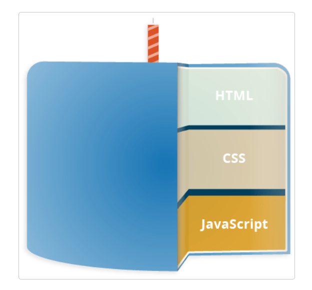
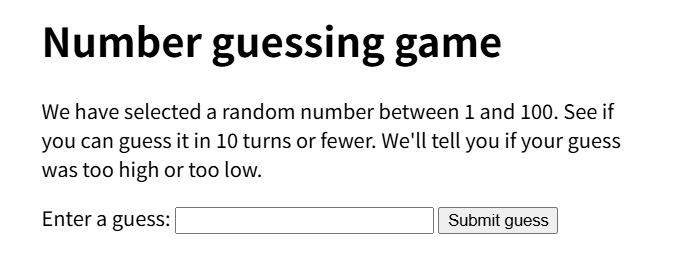
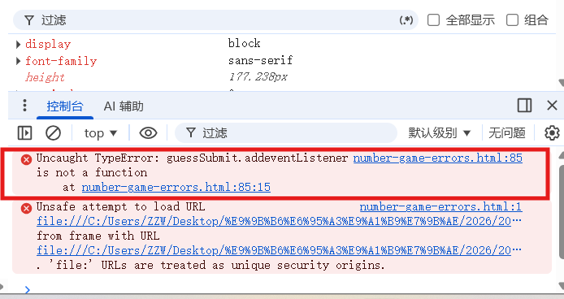
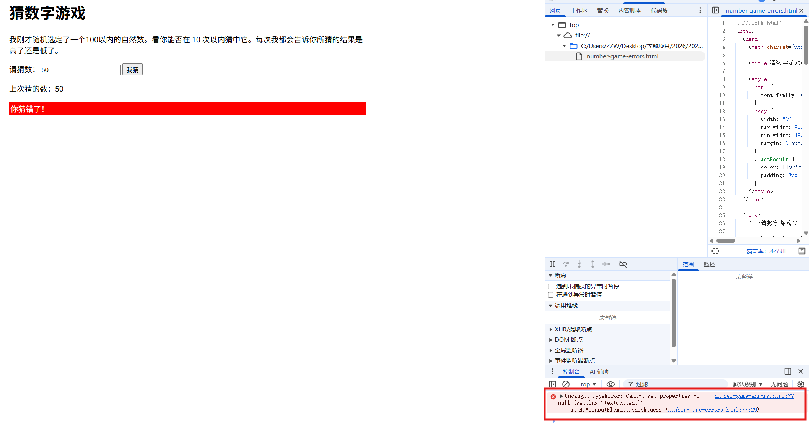
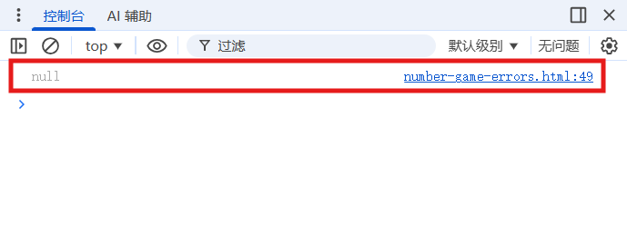
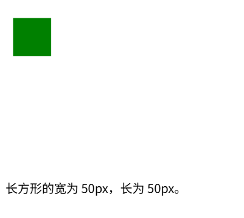
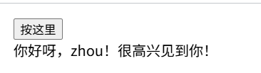

<!DOCTYPE html>


<html lang="zh-CN">


<head>
  <meta name="baidu-site-verification" content="codeva-NSg7ynviLa" />
  <meta charset="utf-8" />
    
  <meta name="viewport" content="width=device-width, initial-scale=1, maximum-scale=1" />
  <title>
    网络版报告四之JavaScript基础 |  
  </title>
  <meta name="generator" content="hexo-theme-ayer">
  
  <link rel="shortcut icon" href="/images/mojie.jpg" />
  
  
<link rel="stylesheet" href="/dist/main.css">

  <link rel="stylesheet" href="https://cdn.jsdelivr.net/gh/Shen-Yu/cdn/css/remixicon.min.css">
  
<link rel="stylesheet" href="/css/custom.css">

  
  <script src="https://cdn.jsdelivr.net/npm/pace-js@1.0.2/pace.min.js"></script>
  
  

  

<link rel="alternate" href="/atom.xml" title="null" type="application/atom+xml">
</head>

</html>

<body>
  <div id="app">
    
      
    <main class="content on">
      <section class="outer">
  <article
  id="post-网络版报告四之JavaScript基础"
  class="article article-type-post"
  itemscope
  itemprop="blogPost"
  data-scroll-reveal
>
  <div class="article-inner">
    
    <header class="article-header">
       
<h1 class="article-title sea-center" style="border-left:0" itemprop="name">
  网络版报告四之JavaScript基础
</h1>
 

    </header>
     
    <div class="article-meta">
      <a href="/posts/e0ee8b5b/" class="article-date">
  <time datetime="2026-06-12T06:21:53.000Z" itemprop="datePublished">2026-06-12</time>
</a>   
<div class="word_count">
    <span class="post-time">
        <span class="post-meta-item-icon">
            <i class="ri-quill-pen-line"></i>
            <span class="post-meta-item-text"> 字数统计:</span>
            <span class="post-count">21.4k</span>
        </span>
    </span>

    <span class="post-time">
        &nbsp; | &nbsp;
        <span class="post-meta-item-icon">
            <i class="ri-book-open-line"></i>
            <span class="post-meta-item-text"> 阅读时长≈</span>
            <span class="post-count">80 分钟</span>
        </span>
    </span>
</div>
 
    </div>
      
    <div class="tocbot"></div>


  
    <div class="article-entry" itemprop="articleBody">
       
  <link rel="stylesheet" type="text/css" href="https://cdn.jsdelivr.net/hint.css/2.4.1/hint.min.css"><p>JavaScript 基础学习。</p>
<span id="more"></span>
<h1>什么是JavaScript?</h1>
<h2 id="高层定义">高层定义</h2>
<p>JavaScript 是一种脚本编程语言，它可以在网页上实现复杂的功能，网页展现给你的不再是简单的静态信息，而是实时的内容更新——交互式的地图、2D/3D 动画、滚动播放的视频等等——JavaScript 就在其中。它是标准 Web 技术蛋糕的第三层，其中 HTML 和 CSS 我们已经在学习区的其他部分进行了详细的讲解。</p>
<p></p>
<ul>
<li><strong>HTML</strong> 是一种标记语言，用来结构化我们的网页内容并赋予内容含义，例如定义段落、标题和数据表，或在页面中嵌入图片和视频。</li>
<li><strong>CSS</strong> 是一种样式规则语言，可将样式应用于 HTML 内容，例如设置背景颜色和字体，在多个列中布局内容。</li>
<li><strong>JavaScript</strong> 是一种脚本语言，可以用来创建动态更新的内容，控制多媒体，制作图像动画，还有很多。（好吧，虽然它不是万能的，但可以通过简短的代码来实现神奇的功能。）</li>
</ul>
<p>这三层依次建立，秩序井然。以简单文本标签作为示例。首先用 HTML 将文本标记起来，从而赋予它结构和目的：</p>
<figure class="highlight html"><table><tr><td class="gutter"><pre><span class="line">1</span><br></pre></td><td class="code"><pre><span class="line"><span class="tag">&lt;<span class="name">button</span> <span class="attr">type</span>=<span class="string">&quot;button&quot;</span>&gt;</span>Player 1: Chris<span class="tag">&lt;/<span class="name">button</span>&gt;</span></span><br></pre></td></tr></table></figure>
<p>然后我们可以为它加一点 CSS 让它更好看：</p>
<figure class="highlight css"><table><tr><td class="gutter"><pre><span class="line">1</span><br><span class="line">2</span><br><span class="line">3</span><br><span class="line">4</span><br><span class="line">5</span><br><span class="line">6</span><br><span class="line">7</span><br><span class="line">8</span><br><span class="line">9</span><br><span class="line">10</span><br><span class="line">11</span><br><span class="line">12</span><br></pre></td><td class="code"><pre><span class="line"><span class="selector-tag">button</span> &#123;</span><br><span class="line">  <span class="attribute">font-family</span>: <span class="string">&quot;helvetica neue&quot;</span>, helvetica, sans-serif;</span><br><span class="line">  <span class="attribute">letter-spacing</span>: <span class="number">1px</span>;</span><br><span class="line">  <span class="attribute">text-transform</span>: uppercase;</span><br><span class="line">  <span class="attribute">border</span>: <span class="number">2px</span> solid <span class="built_in">rgb</span>(<span class="number">200</span> <span class="number">200</span> <span class="number">0</span> / <span class="number">60%</span>);</span><br><span class="line">  <span class="attribute">background-color</span>: <span class="built_in">rgb</span>(<span class="number">0</span> <span class="number">217</span> <span class="number">217</span> / <span class="number">60%</span>);</span><br><span class="line">  <span class="attribute">color</span>: <span class="built_in">rgb</span>(<span class="number">100</span> <span class="number">0</span> <span class="number">0</span> / <span class="number">100%</span>);</span><br><span class="line">  <span class="attribute">box-shadow</span>: <span class="number">1px</span> <span class="number">1px</span> <span class="number">2px</span> <span class="built_in">rgb</span>(<span class="number">0</span> <span class="number">0</span> <span class="number">200</span> / <span class="number">40%</span>);</span><br><span class="line">  <span class="attribute">border-radius</span>: <span class="number">10px</span>;</span><br><span class="line">  <span class="attribute">padding</span>: <span class="number">3px</span> <span class="number">10px</span>;</span><br><span class="line">  <span class="attribute">cursor</span>: pointer;</span><br><span class="line">&#125;</span><br></pre></td></tr></table></figure>
<p>最后，我们可以再加上一些 JavaScript 来实现动态行为：</p>
<figure class="highlight js"><table><tr><td class="gutter"><pre><span class="line">1</span><br><span class="line">2</span><br><span class="line">3</span><br><span class="line">4</span><br><span class="line">5</span><br><span class="line">6</span><br><span class="line">7</span><br><span class="line">8</span><br></pre></td><td class="code"><pre><span class="line"><span class="keyword">const</span> button = <span class="variable language_">document</span>.<span class="title function_">querySelector</span>(<span class="string">&quot;button&quot;</span>);</span><br><span class="line"></span><br><span class="line">button.<span class="title function_">addEventListener</span>(<span class="string">&quot;click&quot;</span>, updateName);</span><br><span class="line"></span><br><span class="line"><span class="keyword">function</span> <span class="title function_">updateName</span>(<span class="params"></span>) &#123;</span><br><span class="line">  <span class="keyword">const</span> name = <span class="title function_">prompt</span>(<span class="string">&quot;请输入新的名字&quot;</span>);</span><br><span class="line">  button.<span class="property">textContent</span> = <span class="string">`Player 1: <span class="subst">$&#123;name&#125;</span>`</span>;</span><br><span class="line">&#125;</span><br></pre></td></tr></table></figure>
<p>尝试点击最后一个版本的文本标签，观察会发生什么</p>
<h2 id="它到底可以做什么？">它到底可以做什么？</h2>
<p>客户端 JavaScript 语言的核心包含一些普遍的编程特性，以让你可以做到如下的事情：</p>
<ul>
<li>在变量中储存有用的值。比如上文的示例中，我们请求客户输入一个新名字，然后将其储存到 name 变量中。</li>
<li>操作一段文本（在编程中称为“字符串”(string)）。上文的示例中，我们取字符串“玩家 1:”，然后把它和 name 变量拼接起来，创造出完整的文本标签，比如“玩家 1: 小明”。</li>
<li>运行代码以响应网页中发生的特定事件。上文的示例中，我们用一个 click 事件来检测按钮什么时候被点击，然后运行代码更新文本标签。</li>
<li>以及更多！</li>
</ul>
<p>JavaScript 语言核心之上所构建的功能更令人兴奋。**应用程序接口（Application Programming Interface，API）**将为你的代码提供额外的超能力。</p>
<p>API 是已经建立好的一套代码组件，可以让开发者实现原本很难甚至无法实现的程序。就像现成的家具套件之于家居建设，用一些已经切好的木板组装一个书柜，显然比自己设计，寻找合适的木材，裁切至合适的尺寸和形状，找到正确尺寸的螺钉，然后再组装成书柜要简单得多。</p>
<p>API 通常分为两类。</p>
<p>浏览器 API 内建于 web 浏览器中，它们可以将数据从周边计算机环境中筛选出来，还可以做实用的复杂工作。例如：</p>
<ul>
<li><strong>文档对象模型 API</strong> 能通过创建、移除和修改 HTML，为页面动态应用新样式等手段来操作 HTML 和 CSS。比如当某个页面出现了一个弹窗，或者显示了一些新内容（像上文小演示中看到那样），这就是 DOM 在运行。</li>
<li><strong>地理位置 API</strong> 获取地理信息。这就是为什么<strong>谷歌地图</strong>可以找到你的位置，而且标示在地图上。</li>
<li><strong>画布 (Canvas)</strong> 和 <strong>WebGL API</strong> 可以创建生动的 2D 和 3D 图像。人们正运用这些 web 技术制作令人惊叹的作品。参见 <strong>Chrome Experiments</strong> 以及 <strong>webglsamples</strong>。</li>
<li>诸如 <strong>HTMLMediaElement</strong> 和 <strong>WebRTC</strong> 等影音类 API（英语）让你可以利用多媒体做一些非常有趣的事，比如在网页中直接播放音乐和影片，或用自己的网络摄像头获取录像，然后在其他人的电脑上展示（试用简易版截图演示以理解这个概念）。</li>
</ul>
<blockquote>
<p><strong>备注：</strong> 上述很多演示都不能在旧浏览器中运行。推荐你在测试代码时使用诸如 Firefox、Chrome、Edge 或者 Opera 等现代浏览器。当代码即将交付生产环境时（也就是真实的客户即将使用真实的代码时），你还需要深入考虑<strong>跨平台测试</strong>。</p>
</blockquote>
<p><strong>第三方 API</strong> 并没有默认嵌入浏览器中，一般要从网上取得它们的代码和信息。比如：</p>
<ul>
<li><strong>Twitter API</strong>、<strong>新浪微博 API</strong> 可以在网站上展示最新推文之类。</li>
<li><strong>谷歌地图 API</strong>、<strong>OpenStreetMap API</strong>、<strong>高德地图 API</strong> 可以在网站嵌入定制的地图等等。</li>
</ul>
<blockquote>
<p><strong>备注：</strong> 这些 API 为进阶内容，本模块中不会涉及，更多信息请参考：<strong>客户端 web API 模块</strong>。</p>
</blockquote>
<p>先稳住！你看到的只是冰山一角。你不可能仅靠学一天 JavaScript 就能构建下一个 Facebook、谷歌地图、或 Instagram——还有很多基础需要了解，这也是为什么你会在这里，让我们继续吧！</p>
<h2 id="JavaScript在页面上做了什么？">JavaScript在页面上做了什么？</h2>
<p>现在我们实实在在的学习一些代码，与此同时，探索 JavaScript 运行时背后发生的事情。</p>
<p>让我们简单回顾一下，浏览器在读到一个网页时发生什么（CSS 如何工作一文中首次谈及）。浏览器在读到一个网页时，代码（HTML、CSS 和 JavaScript）将在一个运行环境（浏览器标签页）中得到执行。就像一间工厂，将原材料（代码）加工为一件产品（网页）。</p>
<p>JavaScript 的一个非常常见的用途是通过文档对象模型 API（如上所述）动态修改 HTML 和 CSS，以更新用户界面。</p>
<h3 id="浏览器安全">浏览器安全</h3>
<p>每个浏览器标签页就是其自身用来运行代码的独立容器（这些容器用专业术语称为“运行环境”）。大多数情况下，每个标签页中的代码完全独立运行，而且一个标签页中的代码不能直接影响另一个标签页（或者另一个网站）中的代码。这是一个好的安全措施，如果不这样，黑客就可以从其他网站盗取信息，或做一些其他坏事。</p>
<blockquote>
<p>**备注：**以安全的方式在不同网站或标签页中传送代码和数据的方法是存在的，但它们属于进阶技术，本课程不会涉及。</p>
</blockquote>
<h3 id="JavaScript-运行次序">JavaScript 运行次序</h3>
<p>当浏览器执行到一段 JavaScript 代码时，通常会按从上往下的顺序执行这段代码。这意味着你需要注意代码书写的顺序。比如，我们回到第一个例子中的 JavaScript 代码：</p>
<figure class="highlight js"><table><tr><td class="gutter"><pre><span class="line">1</span><br><span class="line">2</span><br><span class="line">3</span><br><span class="line">4</span><br><span class="line">5</span><br><span class="line">6</span><br><span class="line">7</span><br><span class="line">8</span><br></pre></td><td class="code"><pre><span class="line"><span class="keyword">const</span> button = <span class="variable language_">document</span>.<span class="title function_">querySelector</span>(<span class="string">&quot;button&quot;</span>);</span><br><span class="line"></span><br><span class="line">button.<span class="title function_">addEventListener</span>(<span class="string">&quot;click&quot;</span>, updateName);</span><br><span class="line"></span><br><span class="line"><span class="keyword">function</span> <span class="title function_">updateName</span>(<span class="params"></span>) &#123;</span><br><span class="line">  <span class="keyword">const</span> name = <span class="title function_">prompt</span>(<span class="string">&quot;输入一个新的名字：&quot;</span>);</span><br><span class="line">  button.<span class="property">textContent</span> = <span class="string">`玩家 1：<span class="subst">$&#123;name&#125;</span>`</span>;</span><br><span class="line">&#125;</span><br></pre></td></tr></table></figure>
<p>首先使用 <code>document.querySelector</code>选定一个按钮，然后使用 <code>addEventListener</code>给它附上一个事件监听器（第 3 行），使得在它被点击时，<code>updateName()</code>代码块（5 – 8 行）便会运行。<code>updateName()</code>代码块（这类可以重复使用的代码块称为“函数”）向用户请求一个新名字，然后把这个名字插入到段落中以更新显示。</p>
<p>如果互换了代码里最初两行的顺序，会导致问题。浏览器开发者控制台将返回一个错误：<code>Uncaught ReferenceError: Cannot access 'button' before initialization</code>。这意味着 button 对象还未初始化，所以我们不能为它增添事件监听器。</p>
<blockquote>
<p><strong>备注：</strong> 这是一个很常见的错误，在引用对象之前必须确保该对象已经存在。</p>
</blockquote>
<h3 id="解释代码-vs-编译代码">解释代码 vs 编译代码</h3>
<p>作为程序员，你或许听说过这两个术语：<strong>解释</strong>（interpret）和<strong>编译</strong>（compile）。在解释型语言中，代码自上而下运行，且实时返回运行结果。代码在由浏览器执行前，不需要将其转化为其他形式。代码将直接以文本格式被接收和处理。</p>
<p>相对的，编译型语言需要先将代码转化（编译）成另一种形式才能运行。比如 C/C++ 先被编译成机器码，然后才能由计算机运行。程序将以二进制的格式运行，这些二进制内容是由程序源代码产生的。</p>
<p>JavaScript 是轻量级解释型语言。浏览器接受到 JavaScript 代码，并以代码自身的文本格式运行它。技术上，几乎所有 JavaScript 转换器都运用了一种叫做<strong>即时编译</strong>（just-in-time compiling）的技术；当 JavaScript 源代码被执行时，它会被编译成二进制的格式，使代码运行速度更快。尽管如此，JavaScript 仍然是一门解释型语言，因为编译过程发生在代码运行中，而非之前。</p>
<p>两种类型的语言各有优势，这个问题我们暂且不谈。</p>
<h3 id="服务端代码-vs-客户端代码">服务端代码 vs 客户端代码</h3>
<p>你或许还听说过<strong>服务器端</strong>（server-side）和<strong>客户端</strong>（client-side）代码这两个术语，尤其是在 web 开发时。客户端代码是在用户的电脑上运行的代码，在浏览一个网页时，它的客户端代码就会被下载，然后由浏览器来运行并展示。在本模块中我们讨论的主要是<strong>客户端 JavaScript</strong>。</p>
<p>而服务器端代码在服务器上运行，然后运行结果才由浏览器下载并展示出来。流行的服务器端 web 语言包括：PHP、Python、Ruby、<a target="_blank" rel="noopener" href="http://ASP.NET">ASP.NET</a>，甚至有 JavaScript！JavaScript 也可用作服务器端语言，比如现在流行的 Node.js 环境，你可以在我们的<a target="_blank" rel="noopener" href="https://developer.mozilla.org/zh-CN/docs/Learn_web_development/Extensions/Server-side">动态网页——服务器端编程</a>主题中找到更多关于服务器端 JavaScript 的知识。</p>
<h2 id="怎样向页面添加-JavaScript">怎样向页面添加 JavaScript</h2>
<p>可以像添加 CSS 那样将 JavaScript 添加到 HTML 页面中。CSS 使用 <code>&lt;link&gt;</code> 元素链接外部样式表，使用 <code>&lt;style&gt;</code> 元素向 HTML 嵌入内部样式表，而 JavaScript 这里只需一个元素——<code>&lt;script&gt;</code>。我们来看看它是怎么工作的。</p>
<h3 id="内部-JavaScript">内部 JavaScript</h3>
<ol>
<li>
<p>首先，下载示例文件 <code>apply-javascript.html</code> 。放在一个方便的文件夹里。</p>
</li>
<li>
<p>分别在浏览器和文本编辑器中打开这个文件。你会看到这个 HTML 文件创建了一个简单的网页，其中有一个可点击按钮。</p>
</li>
<li>
<p>接下来，打开文本编辑器，在正文底部——就在结束标签 <code>&lt;/body&gt;</code> 之前——添加以下内容：</p>
<figure class="highlight html"><table><tr><td class="gutter"><pre><span class="line">1</span><br><span class="line">2</span><br><span class="line">3</span><br></pre></td><td class="code"><pre><span class="line"><span class="tag">&lt;<span class="name">script</span>&gt;</span><span class="language-javascript"></span></span><br><span class="line"><span class="language-javascript">  <span class="comment">// 在此编写 JavaScript 代码</span></span></span><br><span class="line"><span class="language-javascript"></span><span class="tag">&lt;/<span class="name">script</span>&gt;</span></span><br></pre></td></tr></table></figure>
</li>
<li>
<p>下面，在 <code>&lt;script&gt;</code>  元素中添加一些 JavaScript 代码，这个页面就能做一些更有趣的事。在“// 在此编写 JavaScript 代码”一行下方添加以下代码：</p>
<figure class="highlight js"><table><tr><td class="gutter"><pre><span class="line">1</span><br><span class="line">2</span><br><span class="line">3</span><br><span class="line">4</span><br><span class="line">5</span><br><span class="line">6</span><br><span class="line">7</span><br><span class="line">8</span><br><span class="line">9</span><br><span class="line">10</span><br><span class="line">11</span><br><span class="line">12</span><br><span class="line">13</span><br></pre></td><td class="code"><pre><span class="line"><span class="variable language_">document</span>.<span class="title function_">addEventListener</span>(<span class="string">&quot;DOMContentLoaded&quot;</span>, <span class="function">() =&gt;</span> &#123;</span><br><span class="line">  <span class="keyword">function</span> <span class="title function_">createParagraph</span>(<span class="params"></span>) &#123;</span><br><span class="line">    <span class="keyword">const</span> para = <span class="variable language_">document</span>.<span class="title function_">createElement</span>(<span class="string">&quot;p&quot;</span>);</span><br><span class="line">    para.<span class="property">textContent</span> = <span class="string">&quot;你点击了按钮！&quot;</span>;</span><br><span class="line">    <span class="variable language_">document</span>.<span class="property">body</span>.<span class="title function_">appendChild</span>(para);</span><br><span class="line">  &#125;</span><br><span class="line"></span><br><span class="line">  <span class="keyword">const</span> buttons = <span class="variable language_">document</span>.<span class="title function_">querySelectorAll</span>(<span class="string">&quot;button&quot;</span>);</span><br><span class="line"></span><br><span class="line">  <span class="keyword">for</span> (<span class="keyword">const</span> button <span class="keyword">of</span> buttons) &#123;</span><br><span class="line">    button.<span class="title function_">addEventListener</span>(<span class="string">&quot;click&quot;</span>, createParagraph);</span><br><span class="line">  &#125;</span><br><span class="line">&#125;);</span><br></pre></td></tr></table></figure>
</li>
<li>
<p>保存文件并刷新浏览器，然后你会发现，点击按钮文档下方将会添加一个新段落。</p>
</li>
</ol>
<blockquote>
<p><strong>备注：</strong> 如果示例不能正常工作，请依次检查所有步骤，并保证没有纰漏。原始文件是否以 <code>.html</code>为扩展名保存到本地了？ <code>&lt;/body&gt;</code>标签前是否添加了 <code>&lt;script&gt;</code>元素？JavaScript 代码输入是否正确？JavaScript 是区分大小写的，而且非常精确，所以你需要准确无误地输入所示的句法，否则可能会出错。</p>
</blockquote>
<h3 id="外部-JavaScript">外部 JavaScript</h3>
<p>这很不错，但是能不能把 JavaScript 代码放置在一个外部文件中呢？现在我们来研究一下。</p>
<ol>
<li>
<p>首先，在刚才的 HTML 文件所在的目录下创建一个名为 <code>script.js</code>的新文件。请确保扩展名为 <code>.js</code>，只有这样才能被识别为 JavaScript 代码。</p>
</li>
<li>
<p>移除当前位于 <code>&lt;/body&gt;</code>底部的 <code>&lt;script&gt;</code>元素，并且在结束标签 <code>&lt;/head&gt;</code>之前添加以下内容（这样浏览器就能比在底部时更快开始加载文件）：</p>
<figure class="highlight html"><table><tr><td class="gutter"><pre><span class="line">1</span><br></pre></td><td class="code"><pre><span class="line"><span class="tag">&lt;<span class="name">script</span> <span class="attr">type</span>=<span class="string">&quot;module&quot;</span> <span class="attr">src</span>=<span class="string">&quot;script.js&quot;</span>&gt;</span><span class="tag">&lt;/<span class="name">script</span>&gt;</span></span><br></pre></td></tr></table></figure>
</li>
<li>
<p>在 <code>script.js</code> 文件中，添加下面的脚本：</p>
<figure class="highlight js"><table><tr><td class="gutter"><pre><span class="line">1</span><br><span class="line">2</span><br><span class="line">3</span><br><span class="line">4</span><br><span class="line">5</span><br><span class="line">6</span><br><span class="line">7</span><br><span class="line">8</span><br><span class="line">9</span><br><span class="line">10</span><br><span class="line">11</span><br></pre></td><td class="code"><pre><span class="line"><span class="keyword">function</span> <span class="title function_">createParagraph</span>(<span class="params"></span>) &#123;</span><br><span class="line">  <span class="keyword">const</span> para = <span class="variable language_">document</span>.<span class="title function_">createElement</span>(<span class="string">&quot;p&quot;</span>);</span><br><span class="line">  para.<span class="property">textContent</span> = <span class="string">&quot;你点击了按钮！&quot;</span>;</span><br><span class="line">  <span class="variable language_">document</span>.<span class="property">body</span>.<span class="title function_">appendChild</span>(para);</span><br><span class="line">&#125;</span><br><span class="line"></span><br><span class="line"><span class="keyword">const</span> buttons = <span class="variable language_">document</span>.<span class="title function_">querySelectorAll</span>(<span class="string">&quot;button&quot;</span>);</span><br><span class="line"></span><br><span class="line"><span class="keyword">for</span> (<span class="keyword">const</span> button <span class="keyword">of</span> buttons) &#123;</span><br><span class="line">  button.<span class="title function_">addEventListener</span>(<span class="string">&quot;click&quot;</span>, createParagraph);</span><br><span class="line">&#125;</span><br></pre></td></tr></table></figure>
</li>
<li>
<p>保存并刷新浏览器。就会发现点击按钮不起作用，如果检查浏览器控制台，会看见类似 Cross-origin request blocked 的错误。这是因为与许多外部资源一样，JavaScript 模块需要从与 HTML 同源的地方加载，并且 <code>file://</code>URL 不符合条件。有两个解决方案可以解决这个问题：（好像意思是说 <code>&lt;script type=&quot;module&quot;&gt;</code> 比较严格，得用互联网服务器 ；我用了这第二种方式）</p>
<ul>
<li>
<p>我们推荐的解决方案是按照指南设置本地测试服务器。运行服务器程序并且在 8000 端口提供文件 <code>apply-javascript-external.html</code>和 <code>script.js</code>，打开浏览器并访问 <code>http://localhost:8000</code>。</p>
</li>
<li>
<p>如果无法运行本地服务器，也可以使用 <code>&lt;script defer src=&quot;script.js&quot;&gt;&lt;/script&gt;</code>代替 <code>&lt;script type=&quot;module&quot; src=&quot;script.js&quot;&gt;&lt;/script&gt;</code>。了解更多信息请参阅下面的脚本加载策略。但是注意，本教程其他部分使用的特性可能需要本地 HTTP 服务器。</p>
</li>
</ul>
</li>
<li>
<p>现在网站和之前一样了，但是我们的 JavaScript 放在了一个外部文件。一般来说，这对组织代码并在多个 HTML 文件中复用来说是一件好事。此外，没有大段脚本的 HTML 更容易阅读。</p>
</li>
</ol>
<h3 id="内联-JavaScript-处理器">内联 JavaScript 处理器</h3>
<p>注意，有时候你会遇到在 HTML 中存在着一丝真实的 JavaScript 代码。它或许看上去像这样：</p>
<figure class="highlight js"><table><tr><td class="gutter"><pre><span class="line">1</span><br><span class="line">2</span><br><span class="line">3</span><br><span class="line">4</span><br><span class="line">5</span><br></pre></td><td class="code"><pre><span class="line"><span class="keyword">function</span> <span class="title function_">createParagraph</span>(<span class="params"></span>) &#123;</span><br><span class="line">  <span class="keyword">const</span> para = <span class="variable language_">document</span>.<span class="title function_">createElement</span>(<span class="string">&quot;p&quot;</span>);</span><br><span class="line">  para.<span class="property">textContent</span> = <span class="string">&quot;你点击了按钮！&quot;</span>;</span><br><span class="line">  <span class="variable language_">document</span>.<span class="property">body</span>.<span class="title function_">appendChild</span>(para);</span><br><span class="line">&#125;</span><br></pre></td></tr></table></figure>
<figure class="highlight html"><table><tr><td class="gutter"><pre><span class="line">1</span><br></pre></td><td class="code"><pre><span class="line"><span class="tag">&lt;<span class="name">button</span> <span class="attr">onclick</span>=<span class="string">&quot;createParagraph()&quot;</span>&gt;</span>点我！<span class="tag">&lt;/<span class="name">button</span>&gt;</span></span><br></pre></td></tr></table></figure>
<p>这个演示与之前的两个功能完全一致，只是在 <code>&lt;button&gt;</code>元素中包含了一个内联的 <code>onclick</code>处理器，使得函数在按钮被按下时运行。</p>
<p>然而请不要这样做。这将使 JavaScript 污染了 HTML，而且效率低下。对于每个需要应用 JavaScript 的按钮，你都得手动添加 <code>onClick=&quot;createParagraph()&quot;</code>属性。</p>
<h3 id="请使用-addEventListener">请使用 <code>addEventListener</code></h3>
<p>与其在 HTML 中包含 JavaScript，不如使用纯 JavaScript 构造。通过 <code>querySelectorAll()</code> 函数，可以选择页面上的所有按钮。然后可以循环遍历这些按钮，使用 <code>addEventListener()</code> 为每个按钮分配一个处理器。代码如下所示：</p>
<figure class="highlight js"><table><tr><td class="gutter"><pre><span class="line">1</span><br><span class="line">2</span><br><span class="line">3</span><br><span class="line">4</span><br><span class="line">5</span><br></pre></td><td class="code"><pre><span class="line"><span class="keyword">const</span> buttons = <span class="variable language_">document</span>.<span class="title function_">querySelectorAll</span>(<span class="string">&quot;button&quot;</span>);</span><br><span class="line"></span><br><span class="line"><span class="keyword">for</span> (<span class="keyword">let</span> i = <span class="number">0</span>; i &lt; buttons.<span class="property">length</span>; i++) &#123;</span><br><span class="line">  buttons[i].<span class="title function_">addEventListener</span>(<span class="string">&quot;click&quot;</span>, createParagraph);</span><br><span class="line">&#125;</span><br></pre></td></tr></table></figure>
<p>这样写乍看去比 <code>onclick</code> 属性要长一些，但是这样写会对页面上所有按钮生效，无论多少个，或添加或删除，完全无需修改 JavaScript 代码。</p>
<blockquote>
<p>**备注：**请尝试修改 <code>apply-javascript.html</code> 以添加更多按钮。刷新后可发现按下任一按钮时都会创建一个段落。这样很高效吧？</p>
</blockquote>
<h3 id="脚本加载策略">脚本加载策略</h3>
<p>页面上的所有 HTML 代码都按其出现的顺序加载。如果使用 JavaScript 去操作页面上的元素（更准确的说，是文档对象模型），那么如果 JavaScript 在 HTML 之前就被加载和解析了，代码将无法运行。</p>
<p>有几种不同的策略来确保 JavaScript 只在 HTML 解析之后运行：</p>
<ul>
<li>
<p>在上面的内部 JavaScript 示例中，脚本元素放在文档正文（底部），因此只能在 HTML 正文的其他部分被解析以后运行。</p>
</li>
<li>
<p>在上面的外部 JavaScript 实例中，脚本元素放在文档的头部，在解析 HTML 正文之前解析。但是由于我们使用了 <code>&lt;script type=&quot;module&quot;&gt;</code>，代码被视为一个模块，并且浏览器在执行 JavaScript 模块之前会等待所有的 HTML 代码都处理完毕（也可以把外部脚本放在正文的底部，但是如果 HTML 内容较多且网络较慢，在浏览器开始获取并加载脚本之前可能需要大量的时间，因此将外部脚本放在头部通常会更好一些）。</p>
</li>
<li>
<p>如果仍然想在文档头部使用非模块脚本，可能阻塞整个页面的显示，并且可能出现错误，因为脚本在文档解析之前执行：</p>
<ul>
<li>对于外部脚本，应该在 <code>&lt;script&gt;</code>元素上添加 <code>defer</code>（或者如果不需要 HTML 解析完成，则可以使用 <code>async</code>）属性。</li>
<li>对于内部脚本，应该将代码封装在 <code>DOMContentLoaded</code>事件监听器中。</li>
</ul>
<p>这超出了本教程的范围，除非你需要支持非常老的浏览器，否则不要这样做，使用 <code>&lt;script type=&quot;module&quot;&gt;</code>代替即可。</p>
</li>
</ul>
<h2 id="注释">注释</h2>
<p>就像 HTML 和 CSS，JavaScript 代码中也可以添加注释，浏览器会忽略它们，注释只是为你的同事（还有你，如果半年后再看自己写的代码，还会记得其中的含义吗）提供关于代码如何工作的指引。注释非常有用，而且应该经常使用，尤其在大型应用中。注释分为两类：</p>
<ul>
<li>
<p>在双斜杠（//）后添加单行注释，比如：</p>
<figure class="highlight js"><table><tr><td class="gutter"><pre><span class="line">1</span><br></pre></td><td class="code"><pre><span class="line"><span class="comment">// 我是一条注释</span></span><br></pre></td></tr></table></figure>
</li>
</ul>
<ul>
<li>
<p>在 <code>/*</code> 和 <code>*/</code> 之间添加多行注释，比如：</p>
<figure class="highlight js"><table><tr><td class="gutter"><pre><span class="line">1</span><br><span class="line">2</span><br><span class="line">3</span><br><span class="line">4</span><br></pre></td><td class="code"><pre><span class="line"><span class="comment">/*</span></span><br><span class="line"><span class="comment">  我也是</span></span><br><span class="line"><span class="comment">  一条注释</span></span><br><span class="line"><span class="comment">*/</span></span><br></pre></td></tr></table></figure>
</li>
</ul>
<p>比如说，我们可以这样为上一个演示添加注释：</p>
<figure class="highlight js"><table><tr><td class="gutter"><pre><span class="line">1</span><br><span class="line">2</span><br><span class="line">3</span><br><span class="line">4</span><br><span class="line">5</span><br><span class="line">6</span><br><span class="line">7</span><br><span class="line">8</span><br><span class="line">9</span><br><span class="line">10</span><br><span class="line">11</span><br><span class="line">12</span><br><span class="line">13</span><br><span class="line">14</span><br><span class="line">15</span><br><span class="line">16</span><br><span class="line">17</span><br><span class="line">18</span><br></pre></td><td class="code"><pre><span class="line"><span class="comment">// 函数：创建一个新的段落并添加至 HTML body 底部。</span></span><br><span class="line"><span class="keyword">function</span> <span class="title function_">createParagraph</span>(<span class="params"></span>) &#123;</span><br><span class="line">  <span class="keyword">const</span> para = <span class="variable language_">document</span>.<span class="title function_">createElement</span>(<span class="string">&quot;p&quot;</span>);</span><br><span class="line">  para.<span class="property">textContent</span> = <span class="string">&quot;你点了这个按钮！&quot;</span>;</span><br><span class="line">  <span class="variable language_">document</span>.<span class="property">body</span>.<span class="title function_">appendChild</span>(para);</span><br><span class="line">&#125;</span><br><span class="line"></span><br><span class="line"><span class="comment">/*</span></span><br><span class="line"><span class="comment">  1. 取得页面上所有按钮的引用并将它们置于一个数组中。</span></span><br><span class="line"><span class="comment">  2. 通过一个循环为每个按钮添加一个点击事件的监听器。</span></span><br><span class="line"><span class="comment">  当按钮被点击时，调用 createParagraph() 函数。</span></span><br><span class="line"><span class="comment">*/</span></span><br><span class="line"></span><br><span class="line"><span class="keyword">const</span> buttons = <span class="variable language_">document</span>.<span class="title function_">querySelectorAll</span>(<span class="string">&quot;button&quot;</span>);</span><br><span class="line"></span><br><span class="line"><span class="keyword">for</span> (<span class="keyword">const</span> button <span class="keyword">of</span> buttons) &#123;</span><br><span class="line">  button.<span class="title function_">addEventListener</span>(<span class="string">&quot;click&quot;</span>, createParagraph);</span><br><span class="line">&#125;</span><br></pre></td></tr></table></figure>
<blockquote>
<p>**备注：**一般来说，注释越多越好，但如果你发现自己添加了大量注释来解释变量是什么（变量名也许应该更直观），或者解释非常简单的操作（也许代码过于复杂），那么就应该小心了。</p>
</blockquote>
<h1>JavaScript 初体验</h1>
<p>现在，你已经学到了一些 JavaScript 的理论知识，以及用 JavaScript 能够做些什么。下面我们会提供一个创建简单的 Javascript 程序的实践的教程——循序渐进地构建一个简易版“猜数字”游戏。</p>
<p>我们并不要求你立刻完整理解所有代码：你不需要借此学会 JavaScript，甚至不需要理解我们要求你编写的全部代码。当前只是概括地介绍一些抽象的概念，让你了解 JavaScript 的特性是如何协同工作的，以及获得编写 JavaScript 的一些感受。所有具体特性将在后续文章中详细介绍，如果你没有很快地全部理解它们，请不要担心！</p>
<blockquote>
<p>**备注：**可以看到，JavaScript 中许多代码特性和其他编程语言是一致的（函数、循环，等等）。尽管代码语法不尽相同，但概念基本类似。</p>
</blockquote>
<h2 id="像程序员一样思考">像程序员一样思考</h2>
<p>学习编程，语法本身并不难，真正困难的是如何应用它来解决现实世界的问题。你要开始像程序员那样思考。一般来讲，这种思考包括了解你程序运行的目的，为达到该目的应选定的代码类型，以及如何使这些代码协同运行。</p>
<p>为达成这一点，我们需要努力编程，获取语法经验，注重实践，再加一点创造力，几项缺一不可。代码写的越多，就会完成得越优秀。虽然我们不能保证你在 5 分钟内拥有“程序员大脑”，但是整个课程中你将得到大量机会来训练程序员思维。</p>
<p>请牢记这一点，然后开始观察本文的示例，体会一下将其分解为可操作任务的大体过程。</p>
<h2 id="示例——猜数字游戏">示例——猜数字游戏</h2>
<p>本文将向你演示如何构建下面的小游戏：</p>
<p></p>
<p>先玩上几盘，在继续之前先熟悉一下这个游戏。</p>
<p>假设你的老板给你布置了以下游戏设计任务要求：</p>
<blockquote>
<p>我想让你开发一个猜数字游戏。游戏应随机选择一个 1 到 100 之间的自然数，然后邀请玩家在 10 轮以内猜出这个数字。每轮后都应告知玩家的答案正确与否，如果出错了，则告诉他数字是低了还是高了。并且应显示出玩家前一轮所猜的数字。一旦玩家猜对，或者用尽所有机会，游戏将结束。游戏结束后，可以让玩家选择重新开始。</p>
</blockquote>
<p>看到这个要求，首先我们要做的是将其分解成简单的可操作的任务，尽可能从程序员的思维去思考：</p>
<ol>
<li>随机生成一个 1 到 100 之间的自然数。</li>
<li>记录玩家当前的轮数。从 1 开始。</li>
<li>为玩家提供一种猜测数字的方法。</li>
<li>一旦有结果提交，先将其记录下来，以便用户可以看到他们先前的猜测。</li>
<li>然后检查它是否正确。</li>
<li>如果正确：
<ol>
<li>显示祝贺消息。</li>
<li>阻止玩家继续猜测（这会使游戏混乱）。</li>
<li>显示控件允许玩家重新开始游戏。</li>
</ol>
</li>
<li>如果出错，并且玩家有剩余轮次：
<ol>
<li>告诉玩家他们错了。</li>
<li>允许他们输入另一个猜测。</li>
<li>轮数加 1。</li>
</ol>
</li>
<li>如果出错，并且玩家没有剩余轮次：
<ol>
<li>告诉玩家游戏结束。</li>
<li>阻止玩家继续猜测（这会使游戏混乱）。</li>
<li>显示控件允许玩家重新开始游戏。</li>
</ol>
</li>
<li>一旦游戏重启，确保游戏的逻辑和 UI 完全重置，然后返回步骤 1。</li>
</ol>
<p>让我们继续，看看我们如何将这些步骤转换为代码，构建这个示例，从而探索 JavaScript 的特性。</p>
<h3 id="初始位置">初始位置</h3>
<p>本教程开始前，请将 number-guessing-game-start.html 文件保存下来。同时在文本编辑器和 Web 浏览器中将其打开，可以看到一个简单的标题、一段游戏说明和一个用于输入猜测的表单，此时表单不会执行任何操作。</p>
<p>我们将在 HTML 底部的 <code>&lt;script&gt;</code>元素中添加新的代码：</p>
<figure class="highlight html"><table><tr><td class="gutter"><pre><span class="line">1</span><br><span class="line">2</span><br><span class="line">3</span><br></pre></td><td class="code"><pre><span class="line"><span class="tag">&lt;<span class="name">script</span>&gt;</span><span class="language-javascript"></span></span><br><span class="line"><span class="language-javascript">  <span class="comment">// Your JavaScript goes here</span></span></span><br><span class="line"><span class="language-javascript"></span><span class="tag">&lt;/<span class="name">script</span>&gt;</span></span><br></pre></td></tr></table></figure>
<h3 id="添加变量以保存数据">添加变量以保存数据</h3>
<p>让我们开始吧。首先，在<code>&lt;script&gt;</code> 元素中添加以下代码：</p>
<figure class="highlight js"><table><tr><td class="gutter"><pre><span class="line">1</span><br><span class="line">2</span><br><span class="line">3</span><br><span class="line">4</span><br><span class="line">5</span><br><span class="line">6</span><br><span class="line">7</span><br><span class="line">8</span><br><span class="line">9</span><br><span class="line">10</span><br><span class="line">11</span><br></pre></td><td class="code"><pre><span class="line"><span class="keyword">let</span> randomNumber = <span class="title class_">Math</span>.<span class="title function_">floor</span>(<span class="title class_">Math</span>.<span class="title function_">random</span>() * <span class="number">100</span>) + <span class="number">1</span>;</span><br><span class="line"></span><br><span class="line"><span class="keyword">const</span> guesses = <span class="variable language_">document</span>.<span class="title function_">querySelector</span>(<span class="string">&quot;.guesses&quot;</span>);</span><br><span class="line"><span class="keyword">const</span> lastResult = <span class="variable language_">document</span>.<span class="title function_">querySelector</span>(<span class="string">&quot;.lastResult&quot;</span>);</span><br><span class="line"><span class="keyword">const</span> lowOrHi = <span class="variable language_">document</span>.<span class="title function_">querySelector</span>(<span class="string">&quot;.lowOrHi&quot;</span>);</span><br><span class="line"></span><br><span class="line"><span class="keyword">const</span> guessSubmit = <span class="variable language_">document</span>.<span class="title function_">querySelector</span>(<span class="string">&quot;.guessSubmit&quot;</span>);</span><br><span class="line"><span class="keyword">const</span> guessField = <span class="variable language_">document</span>.<span class="title function_">querySelector</span>(<span class="string">&quot;.guessField&quot;</span>);</span><br><span class="line"></span><br><span class="line"><span class="keyword">let</span> guessCount = <span class="number">1</span>;</span><br><span class="line"><span class="keyword">let</span> resetButton;</span><br></pre></td></tr></table></figure>
<p>这段代码设置了存储数据的变量和常量以供程序使用。</p>
<p>变量本质上是值（例如数字或字符串）的名称。你可以使用关键字 <code>let</code> 和一个名字来创建变量。</p>
<p>常量也用于对值进行命名，但其不像变量，在创建后将无法修改这个值。本例中用常量来保存对用户界面元素的引用。界面元素的文字可能会改变，但引用是不变的。你可以使用关键字 <code>const</code> 和一个名字来创建常量。</p>
<p>可以使用等号（=）和一个值来为变量或常量赋值。</p>
<p>在我们的示例中：</p>
<ul>
<li>
<p>我们用数学算法得出一个 1 到 100 之间的随机数，并赋值给第一个变量（<code>randomNumber</code>）。</p>
</li>
<li>
<p>接下来的三个常量均存储着一个引用，分别指向 HTML 结果段落中某个元素（注意它们是如何放置在 <code>&lt;div&gt;</code> 元素内的），用于在代码后面段落中插入值：</p>
<figure class="highlight html"><table><tr><td class="gutter"><pre><span class="line">1</span><br><span class="line">2</span><br><span class="line">3</span><br><span class="line">4</span><br><span class="line">5</span><br></pre></td><td class="code"><pre><span class="line"><span class="tag">&lt;<span class="name">div</span> <span class="attr">class</span>=<span class="string">&quot;resultParas&quot;</span>&gt;</span></span><br><span class="line">  <span class="tag">&lt;<span class="name">p</span> <span class="attr">class</span>=<span class="string">&quot;guesses&quot;</span>&gt;</span><span class="tag">&lt;/<span class="name">p</span>&gt;</span></span><br><span class="line">  <span class="tag">&lt;<span class="name">p</span> <span class="attr">class</span>=<span class="string">&quot;lastResult&quot;</span>&gt;</span><span class="tag">&lt;/<span class="name">p</span>&gt;</span></span><br><span class="line">  <span class="tag">&lt;<span class="name">p</span> <span class="attr">class</span>=<span class="string">&quot;lowOrHi&quot;</span>&gt;</span><span class="tag">&lt;/<span class="name">p</span>&gt;</span></span><br><span class="line"><span class="tag">&lt;/<span class="name">div</span>&gt;</span></span><br></pre></td></tr></table></figure>
</li>
</ul>
<ul>
<li>
<p>接下来的两个常量存储对表单文本输入和提交按钮的引用，并用于控制以后提交猜测：</p>
<figure class="highlight html"><table><tr><td class="gutter"><pre><span class="line">1</span><br><span class="line">2</span><br><span class="line">3</span><br></pre></td><td class="code"><pre><span class="line"><span class="tag">&lt;<span class="name">label</span> <span class="attr">for</span>=<span class="string">&quot;guessField&quot;</span>&gt;</span>Enter a guess: <span class="tag">&lt;/<span class="name">label</span>&gt;</span></span><br><span class="line"><span class="tag">&lt;<span class="name">input</span> <span class="attr">type</span>=<span class="string">&quot;number&quot;</span> <span class="attr">id</span>=<span class="string">&quot;guessField&quot;</span> <span class="attr">class</span>=<span class="string">&quot;guessField&quot;</span> /&gt;</span></span><br><span class="line"><span class="tag">&lt;<span class="name">input</span> <span class="attr">type</span>=<span class="string">&quot;submit&quot;</span> <span class="attr">value</span>=<span class="string">&quot;Submit guess&quot;</span> <span class="attr">class</span>=<span class="string">&quot;guessSubmit&quot;</span> /&gt;</span></span><br></pre></td></tr></table></figure>
</li>
<li>
<p>倒数第二个变量存储一个计数器并初始化为 1（用于跟踪玩家猜测的次数），最后一个变量存储对重置按钮的引用，这个按钮尚不存在（但稍后就有了）。</p>
</li>
</ul>
<h3 id="函数-（Function）">函数 （Function）</h3>
<p>下面，在之前的代码中添加以下内容：</p>
<figure class="highlight js"><table><tr><td class="gutter"><pre><span class="line">1</span><br><span class="line">2</span><br><span class="line">3</span><br></pre></td><td class="code"><pre><span class="line"><span class="keyword">function</span> <span class="title function_">checkGuess</span>(<span class="params"></span>) &#123;</span><br><span class="line">  <span class="title function_">alert</span>(<span class="string">&quot;I am a placeholder&quot;</span>);</span><br><span class="line">&#125;</span><br></pre></td></tr></table></figure>
<p>函数是可复用的代码块，可以一次编写，反复运行，从而节省了大量的重复代码。它们真的很有用。定义函数的方法很多，但现在我们先集中考虑当前这个简单的方式。这里我们使用关键字 <code>function</code>、一个函数名、一对小括号定义了一个函数。随后是一对花括号（<code>&#123; &#125;</code>）。花括号内部是调用函数时要运行的所有代码。</p>
<p>要运行一个函数代码时，可以输入函数名加一对小括号。</p>
<p>让我们尝试一下。保存你的代码并刷新浏览器页面。然后进入 <code>开发者工具 JavaScript 控制台</code>，并输入以下代码：</p>
<figure class="highlight js"><table><tr><td class="gutter"><pre><span class="line">1</span><br></pre></td><td class="code"><pre><span class="line"><span class="title function_">checkGuess</span>();</span><br></pre></td></tr></table></figure>
<p>在按下 Return/Enter 之后，你应该会看到一个告警窗口，显示 <code>I am a placeholder</code>；我们在代码中定义了一个函数，当我们调用它时，其都会创建一个告警窗口。</p>
<h3 id="运算符">运算符</h3>
<p>JavaScript 运算符允许我们执行比较、做数学运算、连接字符串，以及其他类似的事情。</p>
<p>请保存代码以免丢失，然后刷新浏览器页面，打开 <code>开发者工具 JavaScript 控制台</code>。然后我们就可以尝试下文中的示例了：把下表中“示例”一列中的每一项都原封不动输入进来，每次输入完毕后都按下 Return/Enter ，可以看到返回的结果。</p>
<p>首先让我们来看看算术运算符，例如：</p>
<table>
<thead>
<tr>
<th style="text-align:left">运算符</th>
<th style="text-align:left">名称</th>
<th style="text-align:left">示例</th>
</tr>
</thead>
<tbody>
<tr>
<td style="text-align:left"><code>+</code></td>
<td style="text-align:left">加</td>
<td style="text-align:left"><code>6 + 9</code></td>
</tr>
<tr>
<td style="text-align:left"><code>-</code></td>
<td style="text-align:left">减</td>
<td style="text-align:left"><code>20 - 15</code></td>
</tr>
<tr>
<td style="text-align:left"><code>*</code></td>
<td style="text-align:left">乘</td>
<td style="text-align:left"><code>3 * 7</code></td>
</tr>
<tr>
<td style="text-align:left"><code>/</code></td>
<td style="text-align:left">除</td>
<td style="text-align:left"><code>10 / 5</code></td>
</tr>
</tbody>
</table>
<p>你也可以使用 <code>+</code> 运算符将文本字符串连接在一起（术语“串联”（<em>concatenation</em>））。尝试依次输入以下几行：</p>
<figure class="highlight js"><table><tr><td class="gutter"><pre><span class="line">1</span><br><span class="line">2</span><br><span class="line">3</span><br><span class="line">4</span><br><span class="line">5</span><br><span class="line">6</span><br></pre></td><td class="code"><pre><span class="line"><span class="keyword">const</span> name = <span class="string">&quot;Bingo&quot;</span>;</span><br><span class="line">name;</span><br><span class="line"><span class="keyword">const</span> hello = <span class="string">&quot; says hello!&quot;</span>;</span><br><span class="line">hello;</span><br><span class="line"><span class="keyword">const</span> greeting = name + hello;</span><br><span class="line">greeting;</span><br></pre></td></tr></table></figure>
<p>还有一些快捷操作符可用，称为复合赋值运算符。例如，如果你只希望在现有字符串末尾添加一个新串，可以这样做：</p>
<figure class="highlight js"><table><tr><td class="gutter"><pre><span class="line">1</span><br><span class="line">2</span><br></pre></td><td class="code"><pre><span class="line"><span class="keyword">let</span> name1 = <span class="string">&quot;Bingo&quot;</span>;</span><br><span class="line">name1 += <span class="string">&quot; says hello!&quot;</span>;</span><br></pre></td></tr></table></figure>
<p>这等价于：</p>
<figure class="highlight js"><table><tr><td class="gutter"><pre><span class="line">1</span><br><span class="line">2</span><br></pre></td><td class="code"><pre><span class="line"><span class="keyword">let</span> name2 = <span class="string">&quot;Bingo&quot;</span>;</span><br><span class="line">name2 = name2 + <span class="string">&quot; says hello!&quot;</span>;</span><br></pre></td></tr></table></figure>
<p>在执行真/假比较时（例如在条件语句中，见下表），我们使用比较运算符，例如：</p>
<table>
<thead>
<tr>
<th style="text-align:left">运算符</th>
<th style="text-align:left">名称</th>
</tr>
</thead>
<tbody>
<tr>
<td style="text-align:left"><code>===</code></td>
<td style="text-align:left">全等（它们是否完全一样？）</td>
</tr>
<tr>
<td style="text-align:left"><code>!==</code></td>
<td style="text-align:left">不相等（它们是否不一样？）</td>
</tr>
<tr>
<td style="text-align:left"><code>&lt;</code></td>
<td style="text-align:left">小于</td>
</tr>
<tr>
<td style="text-align:left"><code>&gt;</code></td>
<td style="text-align:left">大于</td>
</tr>
</tbody>
</table>
<h3 id="条件语句（Conditional）">条件语句（Conditional）</h3>
<p>回到我们的 <code>checkGuess()</code> 函数，我们希望它不仅能够给出一个占位符消息，同时还能检查玩家是否猜对，并做出适当的反应。</p>
<p>现在，将当前的 <code>checkGuess()</code> 函数替换为此版本：</p>
<figure class="highlight js"><table><tr><td class="gutter"><pre><span class="line">1</span><br><span class="line">2</span><br><span class="line">3</span><br><span class="line">4</span><br><span class="line">5</span><br><span class="line">6</span><br><span class="line">7</span><br><span class="line">8</span><br><span class="line">9</span><br><span class="line">10</span><br><span class="line">11</span><br><span class="line">12</span><br><span class="line">13</span><br><span class="line">14</span><br><span class="line">15</span><br><span class="line">16</span><br><span class="line">17</span><br><span class="line">18</span><br><span class="line">19</span><br><span class="line">20</span><br><span class="line">21</span><br><span class="line">22</span><br><span class="line">23</span><br><span class="line">24</span><br><span class="line">25</span><br><span class="line">26</span><br><span class="line">27</span><br><span class="line">28</span><br><span class="line">29</span><br><span class="line">30</span><br></pre></td><td class="code"><pre><span class="line"><span class="keyword">function</span> <span class="title function_">checkGuess</span>(<span class="params"></span>) &#123;</span><br><span class="line">  <span class="keyword">const</span> userGuess = <span class="title class_">Number</span>(guessField.<span class="property">value</span>);</span><br><span class="line">  <span class="keyword">if</span> (guessCount === <span class="number">1</span>) &#123;</span><br><span class="line">    guesses.<span class="property">textContent</span> = <span class="string">&quot;Previous guesses: &quot;</span>;</span><br><span class="line">  &#125;</span><br><span class="line">  guesses.<span class="property">textContent</span> += <span class="string">`<span class="subst">$&#123;userGuess&#125;</span> `</span>;</span><br><span class="line"></span><br><span class="line">  <span class="keyword">if</span> (userGuess === randomNumber) &#123;</span><br><span class="line">    lastResult.<span class="property">textContent</span> = <span class="string">&quot;Congratulations! You got it right!&quot;</span>;</span><br><span class="line">    lastResult.<span class="property">style</span>.<span class="property">backgroundColor</span> = <span class="string">&quot;green&quot;</span>;</span><br><span class="line">    lowOrHi.<span class="property">textContent</span> = <span class="string">&quot;&quot;</span>;</span><br><span class="line">    <span class="title function_">setGameOver</span>();</span><br><span class="line">  &#125; <span class="keyword">else</span> <span class="keyword">if</span> (guessCount === <span class="number">10</span>) &#123;</span><br><span class="line">    lastResult.<span class="property">textContent</span> = <span class="string">&quot;!!!GAME OVER!!!&quot;</span>;</span><br><span class="line">    lowOrHi.<span class="property">textContent</span> = <span class="string">&quot;&quot;</span>;</span><br><span class="line">    <span class="title function_">setGameOver</span>();</span><br><span class="line">  &#125; <span class="keyword">else</span> &#123;</span><br><span class="line">    lastResult.<span class="property">textContent</span> = <span class="string">&quot;Wrong!&quot;</span>;</span><br><span class="line">    lastResult.<span class="property">style</span>.<span class="property">backgroundColor</span> = <span class="string">&quot;red&quot;</span>;</span><br><span class="line">    <span class="keyword">if</span> (userGuess &lt; randomNumber) &#123;</span><br><span class="line">      lowOrHi.<span class="property">textContent</span> = <span class="string">&quot;Last guess was too low!&quot;</span>;</span><br><span class="line">    &#125; <span class="keyword">else</span> <span class="keyword">if</span> (userGuess &gt; randomNumber) &#123;</span><br><span class="line">      lowOrHi.<span class="property">textContent</span> = <span class="string">&quot;Last guess was too high!&quot;</span>;</span><br><span class="line">    &#125;</span><br><span class="line">  &#125;</span><br><span class="line"></span><br><span class="line">  guessCount++;</span><br><span class="line">  guessField.<span class="property">value</span> = <span class="string">&quot;&quot;</span>;</span><br><span class="line">  guessField.<span class="title function_">focus</span>();</span><br><span class="line">&#125;</span><br></pre></td></tr></table></figure>
<p>呀——好多的代码！让我们来逐段探究。</p>
<ul>
<li>
<p>第一行声明了一个名为 <code>userGuess</code> 的变量，并将其设置为在文本字段中输入的值。我们还对这个值应用了内置的 <code>Number()</code> 方法，只是为了确保该值是一个数字。由于我们没有更改此变量，因此我们使用 <code>const</code> 声明。</p>
</li>
<li>
<p>接下来，我们遇到我们的第一个条件代码块。条件代码块让你能够根据某个条件的真假来选择性地运行代码。虽然看起来有点像一个函数，但它不是。条件块的最简单形式是从关键字 <code>if</code> 开始，然后是一些括号，然后是一些花括号。括号内包含一个比较。如果比较结果为 <code>true</code>，就会执行花括号内的代码。反之，花括号中的代码就会被跳过，从而执行下面的代码。本文的示例中，比较测试的是 <code>guessCount</code> 变量是否等于 <code>1</code>，即玩家是不是第一次猜数字：</p>
<figure class="highlight js"><table><tr><td class="gutter"><pre><span class="line">1</span><br></pre></td><td class="code"><pre><span class="line">guessCount === <span class="number">1</span>;</span><br></pre></td></tr></table></figure>
<p>如果是，我们让 <code>guesses</code> 段落的文本内容等于 <code>Previous guesses:</code>。如果不是就不用了。</p>
</li>
<li>
<p>第 6 行将当前 <code>userGuess</code> 值附加到 <code>guesses</code> 段落的末尾，并加上一个空格，以使每两个猜测值之间有一个空格。</p>
</li>
<li>
<p>下一个代码块中做了几个检查：</p>
<ul>
<li>第一个 <code>if()&#123; &#125;</code> 检查用户的猜测是否等于在代码顶端设置的 <code>randomNumber</code> 值。如果是，则玩家猜对了，游戏胜利，我们将向玩家显示一个漂亮的绿色的祝贺信息，并清除“高了 / 低了”信息框的内容，调用 <code>setGameOver()</code> 方法。</li>
<li>紧接着是一个 <code>else if()&#123; &#125;</code> 结构。它会检查这个回合是否是玩家的最后一个回合。如果是，程序将做与前一个程序块相同的事情，只是这次它显示的是 Game Over 而不是祝贺消息。</li>
<li>最后的一个块是 <code>else &#123; &#125;</code>，前两个比较都不返回 <code>true</code> 时（也就是玩家尚未猜对，但是还有机会）才会执行这里的代码。在这个情况下，我们会告诉玩家他们猜错了，并执行另一个条件测试，判断并告诉玩家猜测的数字是高了还是低了。</li>
</ul>
</li>
<li>
<p>函数最后三行（26 - 28 行）是为下次猜测值提交做准备的。我们把 <code>guessCount</code> 变量的值加 1，以使玩家消耗一次机会（<code>++</code> 是自增操作符，为自身加 1），然后我们把表单中文本域的值清空，重新聚焦于此，准备下一轮游戏。</p>
</li>
</ul>
<h3 id="事件（Event）">事件（Event）</h3>
<p>现在，我们有一个实现比较不错的 <code>checkGuess()</code> 函数了，但它现在什么事情也做不了，因为我们还没有调用它。理想中，我们希望在点击“Submit guess”按钮时调用它，为此，我们需要使用事件。事件就是浏览器中发生的事儿，比如点击按钮、加载页面、播放视频，等等，我们可以通过调用代码来响应事件。侦听事件发生的结构称为<strong>事件监听器</strong>（Event Listener），响应事件触发而运行的代码块被称为<strong>事件处理器</strong>（Event Handler）。</p>
<p>在 <code>checkGuess()</code> 函数后添加以下代码：</p>
<figure class="highlight js"><table><tr><td class="gutter"><pre><span class="line">1</span><br></pre></td><td class="code"><pre><span class="line">guessSubmit.<span class="title function_">addEventListener</span>(<span class="string">&quot;click&quot;</span>, checkGuess);</span><br></pre></td></tr></table></figure>
<p>这里为 <code>guessSubmit</code> 按钮添加了一个事件监听器。<code>addEventListener()</code> 方法包含两个可输入值（称为“<em>参数</em>”（argument）），监听事件的类型（本例中为 <code>click</code>），和当事件发生时我们想要执行的代码（本例中为 <code>checkGuess()</code> 函数）。注意，<code>addEventListener()</code> 中作为参数的函数名不加括号。</p>
<p>现在，保存代码并刷新页面，示例应该能够工作了，但还不够完善。现在唯一的问题是，如果玩家猜对或游戏次数用完，游戏将出错，因为我们尚未定义游戏结束时应运行的 <code>setGameOver()</code> 函数。现在，让我们补全所缺代码，并完善示例功能。</p>
<h3 id="补全游戏功能">补全游戏功能</h3>
<p>在代码最后添加一个 <code>setGameOver()</code> 函数，然后我们一起来看看它：</p>
<figure class="highlight js"><table><tr><td class="gutter"><pre><span class="line">1</span><br><span class="line">2</span><br><span class="line">3</span><br><span class="line">4</span><br><span class="line">5</span><br><span class="line">6</span><br><span class="line">7</span><br><span class="line">8</span><br></pre></td><td class="code"><pre><span class="line"><span class="keyword">function</span> <span class="title function_">setGameOver</span>(<span class="params"></span>) &#123;</span><br><span class="line">  guessField.<span class="property">disabled</span> = <span class="literal">true</span>;</span><br><span class="line">  guessSubmit.<span class="property">disabled</span> = <span class="literal">true</span>;</span><br><span class="line">  resetButton = <span class="variable language_">document</span>.<span class="title function_">createElement</span>(<span class="string">&quot;button&quot;</span>);</span><br><span class="line">  resetButton.<span class="property">textContent</span> = <span class="string">&quot;Start new game&quot;</span>;</span><br><span class="line">  <span class="variable language_">document</span>.<span class="property">body</span>.<span class="title function_">append</span>(resetButton);</span><br><span class="line">  resetButton.<span class="title function_">addEventListener</span>(<span class="string">&quot;click&quot;</span>, resetGame);</span><br><span class="line">&#125;</span><br></pre></td></tr></table></figure>
<ul>
<li>前两行通过将 <code>disable</code> 属性设置为 <code>true</code> 来禁用表单文本输入和按钮。这样做是必须的，否则用户就可以在游戏结束后提交更多的猜测，游戏的规则将遭到破坏。</li>
<li>接下来的三行创建一个新的 <code>&lt;button&gt;</code>元素，设置它的文本为“Start new game”，并把它添加到当前 HTML 的底部。</li>
<li>最后一行在新按钮上设置了一个事件监听器，当它被点击时，一个名为 <code>resetGame()</code> 的函数被将被调用。</li>
</ul>
<p>现在我们需要定义 <code>resetGame()</code> 这个函数，依然放到代码底部：</p>
<figure class="highlight js"><table><tr><td class="gutter"><pre><span class="line">1</span><br><span class="line">2</span><br><span class="line">3</span><br><span class="line">4</span><br><span class="line">5</span><br><span class="line">6</span><br><span class="line">7</span><br><span class="line">8</span><br><span class="line">9</span><br><span class="line">10</span><br><span class="line">11</span><br><span class="line">12</span><br><span class="line">13</span><br><span class="line">14</span><br><span class="line">15</span><br><span class="line">16</span><br><span class="line">17</span><br><span class="line">18</span><br><span class="line">19</span><br></pre></td><td class="code"><pre><span class="line"><span class="keyword">function</span> <span class="title function_">resetGame</span>(<span class="params"></span>) &#123;</span><br><span class="line">  guessCount = <span class="number">1</span>;</span><br><span class="line"></span><br><span class="line">  <span class="keyword">const</span> resetParas = <span class="variable language_">document</span>.<span class="title function_">querySelectorAll</span>(<span class="string">&quot;.resultParas p&quot;</span>);</span><br><span class="line">  <span class="keyword">for</span> (<span class="keyword">const</span> resetPara <span class="keyword">of</span> resetParas) &#123;</span><br><span class="line">    resetPara.<span class="property">textContent</span> = <span class="string">&quot;&quot;</span>;</span><br><span class="line">  &#125;</span><br><span class="line"></span><br><span class="line">  resetButton.<span class="property">parentNode</span>.<span class="title function_">removeChild</span>(resetButton);</span><br><span class="line"></span><br><span class="line">  guessField.<span class="property">disabled</span> = <span class="literal">false</span>;</span><br><span class="line">  guessSubmit.<span class="property">disabled</span> = <span class="literal">false</span>;</span><br><span class="line">  guessField.<span class="property">value</span> = <span class="string">&quot;&quot;</span>;</span><br><span class="line">  guessField.<span class="title function_">focus</span>();</span><br><span class="line"></span><br><span class="line">  lastResult.<span class="property">style</span>.<span class="property">backgroundColor</span> = <span class="string">&quot;white&quot;</span>;</span><br><span class="line"></span><br><span class="line">  randomNumber = <span class="title class_">Math</span>.<span class="title function_">floor</span>(<span class="title class_">Math</span>.<span class="title function_">random</span>() * <span class="number">100</span>) + <span class="number">1</span>;</span><br><span class="line">&#125;</span><br></pre></td></tr></table></figure>
<p>这段较长的代码将游戏中的一切重置为初始状态，然后玩家就可以开始新一轮的游戏了。此段代码：</p>
<ul>
<li>将 <code>guessCount</code> 重置为 1。</li>
<li>清除所有信息段落。这里，我们选择 <code>&lt;div class=&quot;resultParas&quot;&gt;&lt;/div&gt;</code> 内的所有段落，然后通过循环迭代，将它们的 <code>textContent</code> 设置为 <code>''</code>（一个空字符串）。</li>
<li>删除重置按钮。</li>
<li>启用表单元素，清空文本域并聚焦于此，准备接受新猜测的数字。</li>
<li>删除 <code>lastResult</code> 段落的背景颜色。</li>
<li>生成一个新的随机数，这样就可以猜测新的数字了！</li>
</ul>
<p><strong>此刻一个能功能完善的（简易版）游戏就完成了。恭喜！</strong></p>
<p>我们现在来讨论下其他很重要的代码功能，你可能已经看到过，但是你可能没有意识到这一点。</p>
<h3 id="循环（Loop）">循环（Loop）</h3>
<p>上面代码中有一部分需要我们仔细研读，那就是 <code>for...of</code>循环。循环是一个非常重要的编程概念，它让你能够重复运行一段代码，直到满足某个条件为止。</p>
<p>首先，请再次转到 浏览器开发工具 JavaScript 控制台然后输入以下内容：</p>
<figure class="highlight js"><table><tr><td class="gutter"><pre><span class="line">1</span><br><span class="line">2</span><br><span class="line">3</span><br><span class="line">4</span><br></pre></td><td class="code"><pre><span class="line"><span class="keyword">const</span> fruits = [<span class="string">&quot;apples&quot;</span>, <span class="string">&quot;bananas&quot;</span>, <span class="string">&quot;cherries&quot;</span>];</span><br><span class="line"><span class="keyword">for</span> (<span class="keyword">const</span> fruit <span class="keyword">of</span> fruits) &#123;</span><br><span class="line">  <span class="variable language_">console</span>.<span class="title function_">log</span>(fruit);</span><br><span class="line">&#125;</span><br></pre></td></tr></table></figure>
<p>发生了什么？控制台中打印出了字符串 <code>'apples'、'bananas'、'cherries'</code>。</p>
<p>这正是循环所为。<code>const fruits = ['apples', 'bananas', 'cherries'];</code> 这一行创建了一个数组。我们在本章稍后的完整的数组指南中会作深入探究。就目前而言，数组是元素（本例中为字符串）的集合。</p>
<p><code>for...of</code> 循环为你提供了一种获取数组中的每一个元素的方法，并在元素的基础上运行 JavaScript 代码。<code>for (const fruit of fruits)</code> 这一行的意思是：</p>
<ol>
<li>获取 <code>fruits</code> 中的第一个元素。</li>
<li>将 <code>fruit</code> 变量设置为这个元素，然后运行花括号 <code>&#123;&#125;</code> 间的代码。</li>
<li>获取 <code>fruits</code> 中的下一个元素，然后重复步骤 2，直至到达 <code>fruits</code> 的末尾。</li>
</ol>
<p>现在让我们来看一下猜数字游戏中的循环——<code>resetGame()</code> 函数中可以找到以下内容：</p>
<figure class="highlight js"><table><tr><td class="gutter"><pre><span class="line">1</span><br><span class="line">2</span><br><span class="line">3</span><br><span class="line">4</span><br></pre></td><td class="code"><pre><span class="line"><span class="keyword">const</span> resetParas = <span class="variable language_">document</span>.<span class="title function_">querySelectorAll</span>(<span class="string">&quot;.resultParas p&quot;</span>);</span><br><span class="line"><span class="keyword">for</span> (<span class="keyword">const</span> resetPara <span class="keyword">of</span> resetParas) &#123;</span><br><span class="line">  resetPara.<span class="property">textContent</span> = <span class="string">&quot;&quot;</span>;</span><br><span class="line">&#125;</span><br></pre></td></tr></table></figure>
<p>这段代码通过 <code>querySelectorAll()</code> 方法创建了一个包含 <code>&lt;div class=&quot;resultParas&quot;&gt;</code> 内所有段落的变量，然后通过循环迭代，删除每个段落的文本内容。</p>
<p>请注意，即使 <code>resetParas</code> 是一个常量，我们也可以更改其内部属性，例如 <code>textContent</code>。</p>
<h3 id="浅谈对象（Object）">浅谈对象（Object）</h3>
<p>在讨论前最后再改进一波。在 <code>let resetButton;</code>（脚本顶端部分）下方添加下面一行内容，然后保存文件：</p>
<figure class="highlight js"><table><tr><td class="gutter"><pre><span class="line">1</span><br></pre></td><td class="code"><pre><span class="line">guessField.<span class="title function_">focus</span>();</span><br></pre></td></tr></table></figure>
<p>这一行通过 <code>focus()</code>方法让光标在页面加载完毕时自动放置于 <code>&lt;input&gt;</code> 输入框内，这意味着玩家可以马上开始第一次猜测，而无需点击输入框。这只是一个小的改进，却提高了可用性——为使用户能投入游戏提供一个良好的视觉线索。</p>
<p>深入分析一下。JavaScript 中一切都是对象。对象是存储在单个分组中的相关功能的集合。可以创建自己的对象，但这是较高阶的知识，我们今后才会谈及。现在，仅需简要讨论浏览器内置的对象，它们已经能够做许多有用的事情。</p>
<p>在本示例的特定情况下，我们首先创建一个 <code>guessField</code> 常量来存储对 HTML 中的文本输入表单域的引用，在文档顶部的声明区域中可以找到以下行：</p>
<figure class="highlight js"><table><tr><td class="gutter"><pre><span class="line">1</span><br></pre></td><td class="code"><pre><span class="line"><span class="keyword">const</span> guessField = <span class="variable language_">document</span>.<span class="title function_">querySelector</span>(<span class="string">&quot;.guessField&quot;</span>);</span><br></pre></td></tr></table></figure>
<p>使用 <code>document</code> 对象的 <code>querySelector()</code>方法可以获得这个引用。<code>querySelector()</code> 需要一个信息——用一个 CSS 选择器 可以选中需要引用的元素。</p>
<p>因为 <code>guessField</code> 现在包含一个指向 <code>&lt;input&gt;</code> 元素的引用，它现在就能够访问一系列的属性（存储于对象内部的基础变量，其中一些的值无法改变）和方法（存储在对象内部的基础函数）。<code>focus()</code> 是 <code>input</code> 元素可用方法之一，因此我们可以使用这行代码将光标聚焦于此文本框上︰</p>
<figure class="highlight js"><table><tr><td class="gutter"><pre><span class="line">1</span><br></pre></td><td class="code"><pre><span class="line">guessField.<span class="title function_">focus</span>();</span><br></pre></td></tr></table></figure>
<p>不包含对表单元素引用的变量不提供 <code>focus()</code> 方法。例如，引用 <code>&lt;p&gt;</code> 元素的 <code>guesses</code> 常量，包含一个数字的 <code>guessCount</code> 变量。</p>
<h3 id="操作浏览器对象">操作浏览器对象</h3>
<p>浏览器对象如何使用呢，下面我们来小试牛刀。</p>
<ol>
<li>
<p>首先在浏览器中打开你的程序。</p>
</li>
<li>
<p>接下来打开浏览器开发者工具，并且切换到 JavaScript 控制台的标签页。</p>
</li>
<li>
<p>输入 <code>guessField</code>，控制台将会显示此变量包含一个 <code>&lt;p&gt;</code> 元素。同时控制台还能自动补全运行环境中对象的名字，包括你的变量！</p>
</li>
<li>
<p>现在输入下面的代码：</p>
<figure class="highlight js"><table><tr><td class="gutter"><pre><span class="line">1</span><br></pre></td><td class="code"><pre><span class="line">guessField.<span class="property">value</span> = <span class="number">2</span>;</span><br></pre></td></tr></table></figure>
<p><code>value</code> 属性表示当前文本区域中输入的值。在输入这条指令后，你将看到文本域区中的文本被我们修改了！</p>
</li>
<li>
<p>现在试试输入 <code>guesses</code> 然后回车。控制台会显示一个包含 <code>&lt;p&gt;</code> 元素的变量。</p>
</li>
<li>
<p>现在试试输入下面这一行：</p>
<figure class="highlight js"><table><tr><td class="gutter"><pre><span class="line">1</span><br></pre></td><td class="code"><pre><span class="line">guesses.<span class="property">value</span>;</span><br></pre></td></tr></table></figure>
<p>浏览器会返回 <code>undefined</code>，因为段落中并不存在 <code>value</code> 属性。</p>
</li>
<li>
<p>为了改变段落中的文本内容，你需要用 <code>textContent</code>属性来代替 <code>value</code>。试试这个：</p>
<figure class="highlight js"><table><tr><td class="gutter"><pre><span class="line">1</span><br></pre></td><td class="code"><pre><span class="line">guesses.<span class="property">textContent</span> = <span class="string">&quot;Where is my paragraph?&quot;</span>;</span><br></pre></td></tr></table></figure>
</li>
<li>
<p>下面是一些有趣的东西。尝试依次输入下面几行：</p>
<figure class="highlight js"><table><tr><td class="gutter"><pre><span class="line">1</span><br><span class="line">2</span><br><span class="line">3</span><br><span class="line">4</span><br></pre></td><td class="code"><pre><span class="line">guesses.<span class="property">style</span>.<span class="property">backgroundColor</span> = <span class="string">&quot;yellow&quot;</span>;</span><br><span class="line">guesses.<span class="property">style</span>.<span class="property">fontSize</span> = <span class="string">&quot;200%&quot;</span>;</span><br><span class="line">guesses.<span class="property">style</span>.<span class="property">padding</span> = <span class="string">&quot;10px&quot;</span>;</span><br><span class="line">guesses.<span class="property">style</span>.<span class="property">boxShadow</span> = <span class="string">&quot;3px 3px 6px black&quot;</span>;</span><br></pre></td></tr></table></figure>
<p>页面上的每个元素都有一个 <code>style</code> 属性，它本身包含一个对象，其属性包含应用于该元素的所有内联 CSS 样式。让我们可以使用 JavaScript 在元素上动态设置新的 CSS 样式。</p>
</li>
</ol>
<h1>查找并解决 JavaScript 代码的错误</h1>
<h2 id="错误类型">错误类型</h2>
<p>一般来说，代码错误主要分为两种：</p>
<ul>
<li><strong>语法错误</strong>：代码中存在拼写错误，将导致程序完全或部分不能运行，通常你会收到一些出错信息。只要熟悉语言并了解出错信息的含义，你就能够顺利修复它们。</li>
<li><strong>逻辑错误</strong>：有些代码语法虽正确，但执行结果和预期相悖，这里便存在着逻辑错误。这意味着程序虽能运行，但会给出错误的结果。由于一般你不会收到来自这些错误的提示，它们通常比语法错误更难修复。</li>
</ul>
<p>事情远没有你想的那么简单，随着探究的深入，会有更多差异因素浮出水面。但在编程生涯的初级阶段上述分类方法已足矣。下面我们将依次分析。</p>
<h2 id="一个出错的示例">一个出错的示例</h2>
<p>让我们重回猜数字游戏，这次我们将故意引入一些错误。请到 Github 下载一份 number-game-errors.html</p>
<ol>
<li>请分别在你的文本编辑器和浏览器中打开刚下载的文件。</li>
<li>先试玩游戏，你会发现在点击“确定”按钮时，游戏并没有响应。</li>
</ol>
<p>首先查看开发者控制台，看是否存在语法错误，然后尝试修复。详见下文。</p>
<h2 id="修复语法错误">修复语法错误</h2>
<p>以前的课程中，你学会了在 开发工具 JavaScript 控制台 中输入一些简单的 JavaScript 命令。（如果你忘记了如何在浏览器中打开它，可以直接打开上面的链接）。更实用的是，当 JavaScript 代码进入浏览器的 JavaScript 引擎时，如果存在语法错误，控制台会提供出错信息。现在我们去看一看。</p>
<ol>
<li>
<p>打开 <code>number-game-errors.html</code> 所在的标签页，然后打开 JavaScript 控制台。你将看到以下出错信息：</p>
<p></p>
</li>
<li>
<p>这个错误很容易跟踪，浏览器为你提供了几条有用的信息（截图来自 Firefox，其他浏览器也提供类似信息）。从左到右依次为：</p>
<ul>
<li>红色的×表示这是一个错误。</li>
<li>一条出错信息，表示问题出在哪儿：“TypeError：<strong>guessSubmit</strong>.addeventListener is not a function”（类型错误：<strong>guessSubmit</strong>.addeventListener 不是函数）</li>
<li>点击 [详细了解] 将跳转到一个 MDN 页面，其中包含了此类错误超详细的解释。</li>
<li>JavaScript 文件名，点击将跳转到开发者工具的“调试器”标签页。如果你按照这个链接，你会看到错误突出显示的确切行。</li>
<li>出错的行，以及导致错误的首个字符号。这里错误来自 85 行，第 15 个字符。</li>
</ul>
</li>
<li>
<p>我们在代码编辑器中找到第 85 行：</p>
<figure class="highlight js"><table><tr><td class="gutter"><pre><span class="line">1</span><br></pre></td><td class="code"><pre><span class="line">guessSubmit.<span class="title function_">addeventListener</span>(<span class="string">&quot;click&quot;</span>, checkGuess);</span><br></pre></td></tr></table></figure>
</li>
<li>
<p>出错信息显示“guessSubmit.addeventListener 不是一个函数”，说明这里可能存在拼写错误。如果你不确定某语法的拼写是否正确，可以到 MDN 上去查找，目前最简便的方法就是去你喜欢的搜索引擎搜索“MDN + 语言<em>特性”。就本文当前内容你可以点击</em>：<a target="_blank" rel="noopener" href="https://developer.mozilla.org/zh-CN/docs/Web/API/EventTarget/addEventListener"><code>addEventListener()</code></a>。</p>
</li>
<li>
<p>因此这里错误显然是我们把函数名写错造成的。请记住，JavaScript 区分大小写，所以任何轻微的不同或大小写问题都会导致出错。将 <code>addeventListener</code> 改为 <code>addEventListener</code> 便可解决。</p>
</li>
</ol>
<h3 id="语法错误：第二轮">语法错误：第二轮</h3>
<ol>
<li>保存页面并刷新，可以看到出错信息不见了。</li>
<li>现在，如果尝试输入一个数字并按确定按钮，你会看到…另一个错误！</li>
</ol>
<p></p>
<ol start="3">
<li>此次出错信息为“TypeError：lowOrHi is null”（“类型错误：lowOrHi 为 null”），在第 78 行。（我的提示信息不一样）</li>
</ol>
<blockquote>
<p><strong>备注：</strong><code>Null</code>是一个特殊值，意思是“什么也没有”，或者“没有值”。这表示 <code>lowOrHi</code> 已声明并初始化，但没有任何有意义的值，可以说：它没有类型没有值。</p>
</blockquote>
<blockquote>
<p>**备注：**这条错误没有在页面加载时立即发生，是因为它发生在函数内部（<code>checkGuess() &#123; ... &#125;</code>块中）。函数内部的代码运行于一个外部代码相互独立的域内，后面函数的文章中将更详细地讲解。此时此刻，只有当代码运行至 86 行并调用 <code>checkGuess()</code> 函数时，代码才会抛出出错信息。</p>
</blockquote>
<ol start="4">
<li>
<p>请观察第 78 行代码：</p>
<figure class="highlight js"><table><tr><td class="gutter"><pre><span class="line">1</span><br></pre></td><td class="code"><pre><span class="line">lowOrHi.<span class="property">textContent</span> = <span class="string">&#x27;你刚才猜高了！&#x27;</span>;</span><br></pre></td></tr></table></figure>
</li>
<li>
<p>该行试图将 <code>lowOrHi</code> 变量中的 <code>textContent</code> 属性设置为一个字符串，但是失败了，这是因为 <code>lowOrHi</code> 并不包含预期的内容。为了一探究竟，你可以在代码中查找一下该变量的其他实例。<code>lowOrHi</code> 最早出现于第 48 行：</p>
<figure class="highlight js"><table><tr><td class="gutter"><pre><span class="line">1</span><br></pre></td><td class="code"><pre><span class="line"><span class="keyword">const</span> lowOrHi = <span class="variable language_">document</span>.<span class="title function_">querySelector</span>(<span class="string">&quot;lowOrHi&quot;</span>);</span><br></pre></td></tr></table></figure>
</li>
<li>
<p>此处，我们试图让该变量包含一个指向文档 HTML 中特定元素的引用。我们来检查一下在该行代码执行后变量的值是否为 <code>null</code>。在第 49 行添加以下代码：</p>
<figure class="highlight js"><table><tr><td class="gutter"><pre><span class="line">1</span><br></pre></td><td class="code"><pre><span class="line"><span class="variable language_">console</span>.<span class="title function_">log</span>(lowOrHi);</span><br></pre></td></tr></table></figure>
</li>
</ol>
<blockquote>
<p><strong>备注：</strong><code>console.log()</code> 是一个非常实用的调试功能，它可以把值打印到控制台。因此我们将其置于代码第 48 行时，它会将 <code>lowOrHi</code> 的值打印至控制台。</p>
</blockquote>
<ol start="7">
<li>保存并刷新，你将在控制台看到 <code>console.log()</code> 的执行结果：</li>
</ol>
<p></p>
<pre><code>显然，此处 `lowOrHi` 的值为 `null`，所以第 48 行肯定有问题。
</code></pre>
<ol start="8">
<li>
<p>我们来思考问题有哪些可能。第 48 行使用 <code>document.querySelector()</code>方法和一个 CSS 选择器来取得一个元素的引用。进一步查看我们的文件，我们可以找到有问题的段落：</p>
<figure class="highlight js"><table><tr><td class="gutter"><pre><span class="line">1</span><br></pre></td><td class="code"><pre><span class="line">&lt;p <span class="keyword">class</span>=<span class="string">&quot;lowOrHi&quot;</span>&gt;&lt;/p&gt;</span><br></pre></td></tr></table></figure>
</li>
<li>
<p>这里我们需要一个类选择器，它应以一个点开头（<code>.</code>），但被传递到第 48 行的<code>querySelector()</code>方法中的选择器没有点。这可能是问题所在！尝试将第 48 行中的 <code>lowOrHi</code> 改成 <code>.lowOrHi</code>。</p>
</li>
<li>
<p>再次保存并刷新，此时 <code>console.log()</code> 语句应该返回我们想要的 <code>&lt;p&gt;</code> 元素。终于把错误搞定了！此时你可以把 <code>console.log()</code> 一行删除，或保留它以便随后参考。选择权在你。</p>
</li>
</ol>
<h3 id="语法错误：第三轮">语法错误：第三轮</h3>
<ol>
<li>现在，如果你再次试玩，你离成功更进了一步。游戏过程按部就班，直到猜测正确或机会用完，游戏结束。</li>
<li>此时如果点击“开始新游戏”，游戏将再次出错，抛出与开始时同样的错误——“TypeError：resetButton.addeventListener is not a function”！这次它来自第 94 行。</li>
<li>查看第 94 行，很容易看到我们犯了同样的错误。我们只需要再次将 <code>addeventListener</code> 改为 <code>addEventListener</code>。现在就改吧。</li>
</ol>
<h2 id="逻辑错误">逻辑错误</h2>
<p>此时，游戏应该可以顺利进行了。但经过几次试玩后你一定会注意到要猜的随机数不是 0 就是 1。这可不是我们期望的！</p>
<p>游戏的逻辑肯定是哪里出现了问题，因为游戏并没有返回错误，只是不能正确运行。</p>
<ol>
<li>
<p>寻找 <code>randomNumber</code> 变量和首次设定随机数的代码。保存着游戏开始时玩家要猜的随机数的实例大约在 44 行：</p>
<figure class="highlight js"><table><tr><td class="gutter"><pre><span class="line">1</span><br></pre></td><td class="code"><pre><span class="line"><span class="keyword">let</span> randomNumber = <span class="title class_">Math</span>.<span class="title function_">floor</span>(<span class="title class_">Math</span>.<span class="title function_">random</span>()) + <span class="number">1</span>;</span><br></pre></td></tr></table></figure>
<p>重新开始游戏产生随机数的设定语句大约在 113 行：</p>
<figure class="highlight js"><table><tr><td class="gutter"><pre><span class="line">1</span><br></pre></td><td class="code"><pre><span class="line">randomNumber = <span class="title class_">Math</span>.<span class="title function_">floor</span>(<span class="title class_">Math</span>.<span class="title function_">random</span>()) + <span class="number">1</span>;</span><br></pre></td></tr></table></figure>
</li>
<li>
<p>为了检查问题是否来自这两行，我们要再次转到我们的朋友 - 控制台：在两行代码之后各插入下面的代码：</p>
<figure class="highlight js"><table><tr><td class="gutter"><pre><span class="line">1</span><br></pre></td><td class="code"><pre><span class="line"><span class="variable language_">console</span>.<span class="title function_">log</span>(randomNumber);</span><br></pre></td></tr></table></figure>
</li>
<li>
<p>保存并刷新，然后试玩，你会看到在控制台显示的随机数总是等于 1。</p>
</li>
</ol>
<h3 id="修正逻辑错误">修正逻辑错误</h3>
<p>为了解决这个问题，让我们来思考这行代码如何工作。首先，我们调用 <code>Math.random()</code>，它生成一个在 0 和 1 之间的十进制随机数，例如 0.5675493843。</p>
<figure class="highlight js"><table><tr><td class="gutter"><pre><span class="line">1</span><br></pre></td><td class="code"><pre><span class="line"><span class="title class_">Math</span>.<span class="title function_">random</span>();</span><br></pre></td></tr></table></figure>
<p>接下来，我们把调用 <code>Math.random()</code> 的结果作为参数传递给 <code>Math.floor()</code>，它会舍弃小数部分返回与之最接近的整数。然后我们给这个结果加上 1：</p>
<figure class="highlight js"><table><tr><td class="gutter"><pre><span class="line">1</span><br></pre></td><td class="code"><pre><span class="line"><span class="title class_">Math</span>.<span class="title function_">floor</span>(<span class="title class_">Math</span>.<span class="title function_">random</span>()) + <span class="number">1</span>;</span><br></pre></td></tr></table></figure>
<p>由于将一个 0 和 1 之间的随机小数的小数部分舍弃，返回的整数一定为 0，因此在此基础上加 1 之后返回值一定为 1。要在舍弃小数部分之前将它乘以 100。便可得到 0 到 99 之间的随机数：</p>
<figure class="highlight js"><table><tr><td class="gutter"><pre><span class="line">1</span><br></pre></td><td class="code"><pre><span class="line"><span class="title class_">Math</span>.<span class="title function_">floor</span>(<span class="title class_">Math</span>.<span class="title function_">random</span>() * <span class="number">100</span>);</span><br></pre></td></tr></table></figure>
<p>然后再加 1，便可得到一个 100 以内随机的自然数：</p>
<figure class="highlight js"><table><tr><td class="gutter"><pre><span class="line">1</span><br></pre></td><td class="code"><pre><span class="line"><span class="title class_">Math</span>.<span class="title function_">floor</span>(<span class="title class_">Math</span>.<span class="title function_">random</span>() * <span class="number">100</span>) + <span class="number">1</span>;</span><br></pre></td></tr></table></figure>
<p>将上述两行内容替换为此，然后保存刷新，游戏终于如期运行了！</p>
<h2 id="其他常见错误">其他常见错误</h2>
<p>代码中还会遇到其他常见错误。本节将指出其中的大部分。</p>
<p><strong>不管输入什么程序总说“你猜对了！”</strong></p>
<p>这是混淆赋值和严格等于运算符的又一症状。例如我们把 <code>checkGuess()</code> 里的：</p>
<figure class="highlight js"><table><tr><td class="gutter"><pre><span class="line">1</span><br></pre></td><td class="code"><pre><span class="line"><span class="keyword">if</span> (userGuess === randomNumber) &#123;</span><br></pre></td></tr></table></figure>
<p>改成</p>
<figure class="highlight js"><table><tr><td class="gutter"><pre><span class="line">1</span><br></pre></td><td class="code"><pre><span class="line"><span class="keyword">if</span> (userGuess = randomNumber) &#123;</span><br></pre></td></tr></table></figure>
<p>因为条件永远返回 <code>true</code>，使得程序报告你猜对了。小心哦！</p>
<p><strong>SyntaxError: missing ) after argument list</strong></p>
<p>这个很简单。通常意味着函数/方法调用后的结束括号忘写了。</p>
<p><strong>SyntaxError: missing : after property id</strong></p>
<p>JavaScript 对象的形式有错时通常会导致此类错误，如果把</p>
<figure class="highlight js"><table><tr><td class="gutter"><pre><span class="line">1</span><br></pre></td><td class="code"><pre><span class="line"><span class="keyword">function</span> <span class="title function_">checkGuess</span>(<span class="params"></span>) &#123;</span><br></pre></td></tr></table></figure>
<p>写成了</p>
<figure class="highlight js"><table><tr><td class="gutter"><pre><span class="line">1</span><br></pre></td><td class="code"><pre><span class="line"><span class="keyword">function</span> <span class="title function_">checkGuess</span>(<span class="params"> &#123;</span></span><br></pre></td></tr></table></figure>
<p>浏览器会认为我们试图将函数的内容当作参数传回函数。写圆括号时要小心！</p>
<p><strong>SyntaxError: missing } after function body</strong></p>
<p>这个简单。通常意味着函数或条件结构中丢失了一个花括号。如果我们将 <code>checkGuess()</code> 函数末尾的花括号删除，就会得到这个错误。</p>
<p><strong>SyntaxError: expected expression, got ‘<em>string</em>’ 或 SyntaxError: string literal contains an unescaped line break</strong></p>
<p>这个错误通常意味着字符串两端的引号漏写了一个。如果你漏写了字符串开始的引号，将得到第一条出错信息，这里的 '<em>string’</em> 将被替换为浏览器发现的意外字符。如果漏写了末尾的引号将得到第二条。</p>
<p>对于所有的这些错误，想想我们在实例中是如何逐步解决的。错误出现时，转到错误所在的行观察是否能发现问题所在。记住，错误不一定在那一行，错误的原因也可能和我们在上面所说的不同！</p>
<h1>如何存储你需要的信息——变量</h1>
<p>这一块的笔记由于 onedrive 崩了导致没有保存，见官网：<a target="_blank" rel="noopener" href="https://developer.mozilla.org/zh-CN/docs/Learn_web_development/Core/Scripting/Variables">https://developer.mozilla.org/zh-CN/docs/Learn_web_development/Core/Scripting/Variables</a></p>
<p>使用 <code>let</code> 声明变量。</p>
<h1>数字与运算符</h1>
<h2 id="人人都爱数学">人人都爱数学</h2>
<p>与其他一些编程语言不同，JavaScript 只有一个数据类型用来表示数字（无论是整数还是小数）——就是 <code>Number</code>。这意味着，你在 JavaScript 中处理的任何类型的数字，都以完全相同的方式处理它们。</p>
<h3 id="实用的Number方法">实用的Number方法</h3>
<p><code>Number</code> 对象是一个实例，它表示你在 JavaScript 中使用的所有标准数字。该对象提供了一系列有用的方法，供你对数字进行操作。本文并未详细介绍这些方法，因为我们希望将其作为入门指南，仅涵盖当前所需的真正基础内容；然而，一旦你反复阅读本模块后，建议查阅对象参考页面以进一步了解可用功能。</p>
<p>例如，要将数字四舍五入到指定的小数位数，可以使用 <code>toFixed()</code> 方法。在浏览器的控制台中输入以下代码：</p>
<figure class="highlight js"><table><tr><td class="gutter"><pre><span class="line">1</span><br><span class="line">2</span><br><span class="line">3</span><br><span class="line">4</span><br></pre></td><td class="code"><pre><span class="line"><span class="keyword">const</span> lotsOfDecimal = <span class="number">1.7665849587</span>;</span><br><span class="line">lotsOfDecimal;</span><br><span class="line"><span class="keyword">const</span> twoDecimalPlaces = lotsOfDecimal.<span class="title function_">toFixed</span>(<span class="number">2</span>);</span><br><span class="line">twoDecimalPlaces;</span><br></pre></td></tr></table></figure>
<h3 id="转换至-number-数据类型">转换至 number 数据类型</h3>
<p>有时，你可能会遇到一个以字符串类型存储的数字，这会使得对其进行计算变得困难。这种情况最常发生在数据被输入到表单的输入框中，且输入类型为文本时。解决此问题的方法是将字符串值传递给<code>Number()</code> 构造函数，以返回该值的数字版本。</p>
<p>例如，尝试在控制台下输入这几行：</p>
<figure class="highlight js"><table><tr><td class="gutter"><pre><span class="line">1</span><br><span class="line">2</span><br></pre></td><td class="code"><pre><span class="line"><span class="keyword">let</span> myNumber = <span class="string">&quot;74&quot;</span>;</span><br><span class="line">myNumber += <span class="number">3</span>;</span><br></pre></td></tr></table></figure>
<p>你会得到的结果为 743，而不是 77，因为 <code>myNumber</code> 实际上是一个字符串。你可以通过以下代码来测试这个行为：</p>
<figure class="highlight js"><table><tr><td class="gutter"><pre><span class="line">1</span><br></pre></td><td class="code"><pre><span class="line"><span class="keyword">typeof</span> myNumber;</span><br></pre></td></tr></table></figure>
<p>为了修正计算，可以这么做：</p>
<figure class="highlight js"><table><tr><td class="gutter"><pre><span class="line">1</span><br><span class="line">2</span><br></pre></td><td class="code"><pre><span class="line"><span class="keyword">let</span> myNumber = <span class="string">&quot;74&quot;</span>;</span><br><span class="line">myNumber = <span class="title class_">Number</span>(myNumber) + <span class="number">3</span>;</span><br></pre></td></tr></table></figure>
<p>结果为 77，与最初预期一致。</p>
<h2 id="算术运算符">算术运算符</h2>
<p>算术运算符用于在 JavaScript 中进行数学计算：</p>
<table>
<thead>
<tr>
<th style="text-align:left">运算符</th>
<th style="text-align:left">名称</th>
<th style="text-align:left">作用</th>
<th style="text-align:left">示例</th>
</tr>
</thead>
<tbody>
<tr>
<td style="text-align:left"><code>+</code></td>
<td style="text-align:left">加法</td>
<td style="text-align:left">两个数相加。</td>
<td style="text-align:left"><code>6 + 9</code></td>
</tr>
<tr>
<td style="text-align:left"><code>-</code></td>
<td style="text-align:left">减法</td>
<td style="text-align:left">从左边的数减去右边的数。</td>
<td style="text-align:left"><code>20 - 15</code></td>
</tr>
<tr>
<td style="text-align:left"><code>*</code></td>
<td style="text-align:left">乘法</td>
<td style="text-align:left">两个数相乘。</td>
<td style="text-align:left"><code>3 * 7</code></td>
</tr>
<tr>
<td style="text-align:left"><code>/</code></td>
<td style="text-align:left">除法</td>
<td style="text-align:left">将左侧的数除以右侧的数。</td>
<td style="text-align:left"><code>10 / 5</code></td>
</tr>
<tr>
<td style="text-align:left"><code>%</code></td>
<td style="text-align:left">求余（有时候也叫取模）</td>
<td style="text-align:left">在你将左边的数分成同右边数字相同的若干整数部分后，返回剩下的余数</td>
<td style="text-align:left"><code>8 % 3</code>（返回 2，因为 3 可以被 8 整除两次，还剩余 2。）</td>
</tr>
<tr>
<td style="text-align:left"><code>**</code></td>
<td style="text-align:left">幂</td>
<td style="text-align:left">取底数（<code>base</code>）的指数次（<code>exponent</code>）方，即指数所指定的底数相乘指数所指定的次数。</td>
<td style="text-align:left"><code>5 ** 2</code>（返回 <code>3125</code>，相当于 <code>5 * 5</code> 。）</td>
</tr>
</tbody>
</table>
<h3 id="运算符优先级">运算符优先级</h3>
<p>在下面的例子中，浏览器会先进行乘法运算，再进行加法运算。</p>
<figure class="highlight js"><table><tr><td class="gutter"><pre><span class="line">1</span><br><span class="line">2</span><br><span class="line">3</span><br></pre></td><td class="code"><pre><span class="line"><span class="keyword">let</span> num1 = <span class="number">10</span>;</span><br><span class="line"><span class="keyword">let</span> num2 = <span class="number">50</span>;</span><br><span class="line">num2 + num1 / <span class="number">8</span> + <span class="number">2</span>;</span><br></pre></td></tr></table></figure>
<p>这是因为<strong>运算符优先级</strong>——一些运算符将在计算算式（在编程中称为<em>表达式</em>）的结果时先于其他运算符被执行。JavaScript 中的运算符优先级与学校的数学课程相同——乘法和除法总是先完成，然后是加法和减法（总是从左到右进行计算）。</p>
<p>如果想要改变计算优先级，可以把想要优先计算的部分用括号围住。所以要得到结果为 6，我们可以这样做：</p>
<figure class="highlight js"><table><tr><td class="gutter"><pre><span class="line">1</span><br></pre></td><td class="code"><pre><span class="line">(num2 + num1) / (<span class="number">8</span> + <span class="number">2</span>);</span><br></pre></td></tr></table></figure>
<h2 id="自增与自减运算符">自增与自减运算符</h2>
<p>有时候，你需要反复把一个变量加 1 或减 1。这可以方便地使用自增（<code>++</code>）和自减（<code>--</code>）运算符来完成。我们在 JavaScript 初体验 文章的“猜数字”游戏中，当我们添加 1 到我们的 guessCount 变量来跟踪用户在每次转动之后剩下的猜测时，我们使用了 <code>++</code> 运算符。</p>
<figure class="highlight js"><table><tr><td class="gutter"><pre><span class="line">1</span><br></pre></td><td class="code"><pre><span class="line">guessCount++;</span><br></pre></td></tr></table></figure>
<p>让我们在控制台中尝试使用这些操作。首先需要注意的是，你无法直接将这些操作应用于一个数字，这可能看起来有些奇怪，但我们实际上是在为变量赋予一个新的更新值，而非直接对值本身进行操作。以下代码将返回错误：</p>
<figure class="highlight js"><table><tr><td class="gutter"><pre><span class="line">1</span><br></pre></td><td class="code"><pre><span class="line"><span class="number">3</span>++;</span><br></pre></td></tr></table></figure>
<p>所以，你只能增加一个现有的变量。尝试这个：</p>
<figure class="highlight js"><table><tr><td class="gutter"><pre><span class="line">1</span><br><span class="line">2</span><br></pre></td><td class="code"><pre><span class="line"><span class="keyword">let</span> num1 = <span class="number">4</span>;</span><br><span class="line">num1++;</span><br></pre></td></tr></table></figure>
<p>好的，第二个奇怪的东西！执行此操作时，你会看到返回值为 4，这是因为浏览器先返回当前值，然后增加变量。如果你再次返回变量值，则可以看到它已经递增：</p>
<figure class="highlight js"><table><tr><td class="gutter"><pre><span class="line">1</span><br></pre></td><td class="code"><pre><span class="line">num1;</span><br></pre></td></tr></table></figure>
<p>自减运算符 <code>--</code> 同样如此，尝试以下操作：</p>
<figure class="highlight js"><table><tr><td class="gutter"><pre><span class="line">1</span><br><span class="line">2</span><br><span class="line">3</span><br></pre></td><td class="code"><pre><span class="line"><span class="keyword">let</span> num2 = <span class="number">6</span>;</span><br><span class="line">num2--;</span><br><span class="line">num2;</span><br></pre></td></tr></table></figure>
<h2 id="赋值运算符">赋值运算符</h2>
<p>赋值运算符是向变量分配值的运算符。我们已经使用了最基本的一个很多次了：<code>=</code>，它只是将右边的值赋给左边的变量，即：</p>
<figure class="highlight js"><table><tr><td class="gutter"><pre><span class="line">1</span><br><span class="line">2</span><br><span class="line">3</span><br></pre></td><td class="code"><pre><span class="line"><span class="keyword">let</span> x = <span class="number">3</span>; <span class="comment">// x 的值是 3</span></span><br><span class="line"><span class="keyword">let</span> y = <span class="number">4</span>; <span class="comment">// y 的值是 4</span></span><br><span class="line">x = y; <span class="comment">// x 和 y 有相同的值，4</span></span><br></pre></td></tr></table></figure>
<p>但是还有一些更复杂的类型，它们提供了有用的快捷方式，可以使你的代码更加整洁和高效。最常见的类型如下：</p>
<table>
<thead>
<tr>
<th style="text-align:left">运算符</th>
<th style="text-align:left">名称</th>
<th style="text-align:left">作用</th>
<th style="text-align:left">示例</th>
<th style="text-align:left">等价形式</th>
</tr>
</thead>
<tbody>
<tr>
<td style="text-align:left"><code>+=</code></td>
<td style="text-align:left">加法赋值</td>
<td style="text-align:left">右边的值加上左边的变量值，然后返回新的变量值</td>
<td style="text-align:left"><code>x += 4;</code></td>
<td style="text-align:left"><code>x = x + 4;</code></td>
</tr>
<tr>
<td style="text-align:left"><code>-=</code></td>
<td style="text-align:left">减法赋值</td>
<td style="text-align:left">从左侧的变量值中减去右侧的值，然后返回新的变量值</td>
<td style="text-align:left"><code>x -= 3;</code></td>
<td style="text-align:left"><code>x = x - 3;</code></td>
</tr>
<tr>
<td style="text-align:left"><code>*=</code></td>
<td style="text-align:left">乘法赋值</td>
<td style="text-align:left">左侧的变量值乘上右侧的值，然后返回新的变量值</td>
<td style="text-align:left"><code>x *= 3;</code></td>
<td style="text-align:left"><code>x = x * 3;</code></td>
</tr>
<tr>
<td style="text-align:left"><code>/=</code></td>
<td style="text-align:left">除法赋值</td>
<td style="text-align:left">左边的变量值除以右边的数值，然后返回新的变量值</td>
<td style="text-align:left"><code>x /= 5;</code></td>
<td style="text-align:left"><code>x = x / 5;</code></td>
</tr>
</tbody>
</table>
<p>尝试在你的控制台中输入上面的一些示例，以了解它们的工作原理。在每种情况下，你是否可以猜出在输入第二行之前的值。</p>
<p>请注意，你可以在每个表达式的右侧使用其他变量，例如：</p>
<figure class="highlight js"><table><tr><td class="gutter"><pre><span class="line">1</span><br><span class="line">2</span><br><span class="line">3</span><br></pre></td><td class="code"><pre><span class="line"><span class="keyword">let</span> x = <span class="number">3</span>; <span class="comment">// x 包含值 3</span></span><br><span class="line"><span class="keyword">let</span> y = <span class="number">4</span>; <span class="comment">// y 包含值 4</span></span><br><span class="line">x *= y; <span class="comment">// x 现在包含值 12</span></span><br></pre></td></tr></table></figure>
<h2 id="调整画布盒子的大小">调整画布盒子的大小</h2>
<p>在这个练习中，我们将让你填写一些数字和操作符来操纵一个盒子的大小。该盒子使用称为 Canvas API 的浏览器 API 绘制。没有必要担心这是如何工作的——现在只关注其数学部分。盒子的宽度和高度（以像素为单位）由变量 <code>x</code> 和 <code>y</code> 定义，变量 <code>x</code> 和 <code>y</code> 最初都被赋值为 50。</p>
<figure class="highlight js"><table><tr><td class="gutter"><pre><span class="line">1</span><br><span class="line">2</span><br><span class="line">3</span><br><span class="line">4</span><br><span class="line">5</span><br><span class="line">6</span><br><span class="line">7</span><br><span class="line">8</span><br><span class="line">9</span><br><span class="line">10</span><br><span class="line">11</span><br><span class="line">12</span><br></pre></td><td class="code"><pre><span class="line"><span class="keyword">const</span> canvas = <span class="variable language_">document</span>.<span class="title function_">getElementById</span>(<span class="string">&quot;canvas&quot;</span>);</span><br><span class="line"><span class="keyword">const</span> para = <span class="variable language_">document</span>.<span class="title function_">querySelector</span>(<span class="string">&quot;p&quot;</span>);</span><br><span class="line"><span class="keyword">const</span> ctx = canvas.<span class="title function_">getContext</span>(<span class="string">&quot;2d&quot;</span>);</span><br><span class="line"></span><br><span class="line"><span class="comment">// 仅编辑以下两行</span></span><br><span class="line"><span class="keyword">let</span> x = <span class="number">50</span>;</span><br><span class="line"><span class="keyword">let</span> y = <span class="number">50</span>;</span><br><span class="line"></span><br><span class="line">ctx.<span class="title function_">clearRect</span>(<span class="number">0</span>, <span class="number">0</span>, canvas.<span class="property">width</span>, canvas.<span class="property">height</span>);</span><br><span class="line">ctx.<span class="property">fillStyle</span> = <span class="string">&quot;green&quot;</span>;</span><br><span class="line">ctx.<span class="title function_">fillRect</span>(<span class="number">10</span>, <span class="number">10</span>, x, y);</span><br><span class="line">para.<span class="property">textContent</span> = <span class="string">`长方形的宽为 <span class="subst">$&#123;x&#125;</span>px，长为 <span class="subst">$&#123;y&#125;</span>px。`</span>;</span><br></pre></td></tr></table></figure>
<p></p>
<h2 id="比较运算符">比较运算符</h2>
<p>有时，我们将要运行真/假测试，然后根据该测试的结果进行相应的操作——为此，我们使用<strong>比较运算符</strong>。</p>
<table>
<thead>
<tr>
<th style="text-align:left">运算符</th>
<th style="text-align:left">名称</th>
<th style="text-align:left">作用</th>
<th style="text-align:left">示例</th>
</tr>
</thead>
<tbody>
<tr>
<td style="text-align:left"><code>===</code></td>
<td style="text-align:left">严格等于</td>
<td style="text-align:left">测试左右值是否相同。</td>
<td style="text-align:left"><code>5 === 2 + 4</code></td>
</tr>
<tr>
<td style="text-align:left"><code>!==</code></td>
<td style="text-align:left">严格不等于</td>
<td style="text-align:left">测试左右值是否<strong>不</strong>相同。</td>
<td style="text-align:left"><code>5 !== 2 + 3</code></td>
</tr>
<tr>
<td style="text-align:left"><code>&lt;</code></td>
<td style="text-align:left">小于</td>
<td style="text-align:left">测试左值是否小于右值。</td>
<td style="text-align:left"><code>10 &lt; 6</code></td>
</tr>
<tr>
<td style="text-align:left"><code>&gt;</code></td>
<td style="text-align:left">大于</td>
<td style="text-align:left">测试左值是否大于右值。</td>
<td style="text-align:left"><code>10 &gt; 20</code></td>
</tr>
<tr>
<td style="text-align:left">&lt;=</td>
<td style="text-align:left">小于或等于</td>
<td style="text-align:left">测试左值是否小于或等于右值。</td>
<td style="text-align:left"><code>3 &lt;= 2</code></td>
</tr>
<tr>
<td style="text-align:left">&gt;=</td>
<td style="text-align:left">大于或等于</td>
<td style="text-align:left">测试左值是否大于或等于右值。</td>
<td style="text-align:left"><code>5 &gt;= 4</code></td>
</tr>
</tbody>
</table>
<blockquote>
<p>**备注：**你可能会看到有些人在他们的代码中使用 <code>==</code> 和 <code>!=</code> 来判断相等和不相等，这些都是 JavaScript 中的有效运算符，但它们与 <code>===</code>/<code>!==</code> 不同，前者测试值是否相同，但是数据类型可能不同，而后者严格测试值和数据类型是否相同。严格的测试往往导致更少的错误，所以我们建议你使用这些严格的版本。</p>
</blockquote>
<p>如果你尝试在控制台中输入这些值，你将看到它们都返回 <code>true</code>/<code>false</code> 值——我们在上一篇文章中提到的那些布尔值。这些是非常有用的，因为它们允许我们在我们的代码中做出决定——每次我们想要选择某种类型时，都会使用这些代码，例如：</p>
<ul>
<li>根据功能是打开还是关闭，在按钮上显示正确的文本标签。</li>
<li>如果游戏结束，则显示游戏消息，或者如果游戏已经获胜，则显示胜利消息。</li>
<li>显示正确的季节性问候，取决于假期季节。</li>
<li>根据选择的缩放级别缩小或放大地图。</li>
</ul>
<p>当我们在以后的文章中查看条件语句时，我们将介绍如何编写这样的逻辑。现在，我们来看一个简单的例子：</p>
<figure class="highlight html"><table><tr><td class="gutter"><pre><span class="line">1</span><br><span class="line">2</span><br></pre></td><td class="code"><pre><span class="line"><span class="tag">&lt;<span class="name">button</span>&gt;</span>启动机器<span class="tag">&lt;/<span class="name">button</span>&gt;</span></span><br><span class="line"><span class="tag">&lt;<span class="name">p</span>&gt;</span>机器已停止运行。<span class="tag">&lt;/<span class="name">p</span>&gt;</span></span><br></pre></td></tr></table></figure>
<figure class="highlight js"><table><tr><td class="gutter"><pre><span class="line">1</span><br><span class="line">2</span><br><span class="line">3</span><br><span class="line">4</span><br><span class="line">5</span><br><span class="line">6</span><br><span class="line">7</span><br><span class="line">8</span><br><span class="line">9</span><br><span class="line">10</span><br><span class="line">11</span><br><span class="line">12</span><br><span class="line">13</span><br><span class="line">14</span><br></pre></td><td class="code"><pre><span class="line"><span class="keyword">const</span> btn = <span class="variable language_">document</span>.<span class="title function_">querySelector</span>(<span class="string">&quot;button&quot;</span>);</span><br><span class="line"><span class="keyword">const</span> txt = <span class="variable language_">document</span>.<span class="title function_">querySelector</span>(<span class="string">&quot;p&quot;</span>);</span><br><span class="line"></span><br><span class="line">btn.<span class="title function_">addEventListener</span>(<span class="string">&quot;click&quot;</span>, updateBtn);</span><br><span class="line"></span><br><span class="line"><span class="keyword">function</span> <span class="title function_">updateBtn</span>(<span class="params"></span>) &#123;</span><br><span class="line">  <span class="keyword">if</span> (btn.<span class="property">textContent</span> === <span class="string">&quot;启动机器&quot;</span>) &#123;</span><br><span class="line">    btn.<span class="property">textContent</span> = <span class="string">&quot;停止机器&quot;</span>;</span><br><span class="line">    txt.<span class="property">textContent</span> = <span class="string">&quot;机器已启动！&quot;</span>;</span><br><span class="line">  &#125; <span class="keyword">else</span> &#123;</span><br><span class="line">    btn.<span class="property">textContent</span> = <span class="string">&quot;启动机器&quot;</span>;</span><br><span class="line">    txt.<span class="property">textContent</span> = <span class="string">&quot;机器已停止运行。&quot;</span>;</span><br><span class="line">  &#125;</span><br><span class="line">&#125;</span><br></pre></td></tr></table></figure>
<p>你可以在 <code>updateBtn()</code> 函数内看到正在使用的相等运算符。在这种情况下，我们不会测试两个数学表达式是否具有相同的值——我们正在测试一个按钮的文本内容是否包含某个字符串——但它仍然是相同的工作原理。如果按钮当前为“启动机器”，则将其标签更改为“停止机器”，并根据需要更新标签。如果按钮上写着“停止机器”时被按下，我们将显示回原来的内容。</p>
<blockquote>
<p><strong>备注：<strong>这种在两个状态之间来回交换的行为通常被称为</strong>切换</strong>。它在一个状态和另一个状态之间切换——点亮，熄灭等。</p>
</blockquote>
<h1>文本处理——JavaScript中的字符串</h1>
<p>接下来，我们将把注意力转向字符串——也就是编程中所说的文本片段。在本文中，我们将了解在学习 JavaScript 时，你应该了解的关于字符串的所有常见内容，例如创建字符串、在字符串中转义引号和连接字符串。</p>
<h2 id="创建字符串">创建字符串</h2>
<p>首先，输入以下几行：</p>
<figure class="highlight plaintext"><table><tr><td class="gutter"><pre><span class="line">1</span><br><span class="line">2</span><br></pre></td><td class="code"><pre><span class="line">const string = &quot;这场革命将不会被电视转播。&quot;;</span><br><span class="line">console.log(string);</span><br></pre></td></tr></table></figure>
<p>就像我们处理数字一样，我们声明一个变量，并用一个字符串值初始化它，然后返回值。这里唯一的区别是，在编写字符串时，我们需要在字符串值的两边加上引号。</p>
<p>如果你不这样做，或者在书写过程中，漏掉其中一个引号，你就会得到一个错误。试着输入以下几行：</p>
<figure class="highlight js"><table><tr><td class="gutter"><pre><span class="line">1</span><br><span class="line">2</span><br><span class="line">3</span><br></pre></td><td class="code"><pre><span class="line"><span class="keyword">const</span> badString1 = 这是一个测试;</span><br><span class="line"><span class="keyword">const</span> badString2 = <span class="string">&#x27;这是一个测试;</span></span><br><span class="line"><span class="string">const badString3 = 这是一个测试&#x27;</span>;</span><br></pre></td></tr></table></figure>
<p>这几行不起作用，因为没有用引号包裹的任何文本字符串都被假定为变量名、属性名、保留字，等等。如果浏览器不能找到它，那么将会引发错误（例如：“missing; before statement”）。如果浏览器能够识别字符串从哪里开始，但是不能找到字符串的结尾符，如第二行所示，那么它也会引发错误（带有“unterminated string literal”)。如果你写的程序目前也引发这样的错误，那么请回过头来仔细检查所有字符串，以确保没有漏写引号。</p>
<p>如果你之前定义了变量 <code>string</code>，下面的操作将会起作用——尝试一下：</p>
<figure class="highlight plaintext"><table><tr><td class="gutter"><pre><span class="line">1</span><br><span class="line">2</span><br></pre></td><td class="code"><pre><span class="line">const badString = string;</span><br><span class="line">console.log(badString);</span><br></pre></td></tr></table></figure>
<p><code>badString</code> 的值现在被设置为了与 <code>string</code> 具有相同的值。</p>
<h3 id="单引号、双引号和反引号">单引号、双引号和反引号</h3>
<p>在 JavaScript 中，你可以选择单引号（<code>'</code>）、双引号（<code>&quot;</code>）或反引号（```）来包裹字符串。以下所有方法都可以：</p>
<figure class="highlight js"><table><tr><td class="gutter"><pre><span class="line">1</span><br><span class="line">2</span><br><span class="line">3</span><br><span class="line">4</span><br><span class="line">5</span><br><span class="line">6</span><br><span class="line">7</span><br></pre></td><td class="code"><pre><span class="line"><span class="keyword">const</span> single = <span class="string">&#x27;单引号&#x27;</span>;</span><br><span class="line"><span class="keyword">const</span> double = <span class="string">&quot;双引号&quot;</span>;</span><br><span class="line"><span class="keyword">const</span> backtick = <span class="string">`反引号`</span>;</span><br><span class="line"></span><br><span class="line"><span class="variable language_">console</span>.<span class="title function_">log</span>(single);</span><br><span class="line"><span class="variable language_">console</span>.<span class="title function_">log</span>(double);</span><br><span class="line"><span class="variable language_">console</span>.<span class="title function_">log</span>(backtick);</span><br></pre></td></tr></table></figure>
<p>字符串的开头和结尾必须使用相同的字符，否则会出现错误：</p>
<figure class="highlight js"><table><tr><td class="gutter"><pre><span class="line">1</span><br></pre></td><td class="code"><pre><span class="line"><span class="keyword">const</span> badQuotes = <span class="string">&#x27;不允许这样写！&quot;;</span></span><br></pre></td></tr></table></figure>
<p>使用单引号声明的字符串和使用双引号声明的字符串是相同的，你可以根据个人偏好来使用。但推荐选择一种样式并在代码中保持一致。</p>
<p>使用反引号声明的字符串是一种特殊字符串，被称为<em>模板字面量</em>。在大多数情况下，模板字面量与普通字符串类似，但它具有一些特殊的属性：</p>
<ul>
<li>你可以在其中嵌入 JavaScript</li>
<li>你可以声明多行的模板字面量</li>
</ul>
<h2 id="嵌入-JavaScript">嵌入 JavaScript</h2>
<p>在模板字面量中，你可以在 <code>$&#123; &#125;</code> 中包装 JavaScript 变量或表达式，其结果将被包含在字符串中：</p>
<figure class="highlight js"><table><tr><td class="gutter"><pre><span class="line">1</span><br><span class="line">2</span><br><span class="line">3</span><br></pre></td><td class="code"><pre><span class="line"><span class="keyword">const</span> name = <span class="string">&quot;克里斯&quot;</span>;</span><br><span class="line"><span class="keyword">const</span> greeting = <span class="string">`你好，<span class="subst">$&#123;name&#125;</span>`</span>;</span><br><span class="line"><span class="variable language_">console</span>.<span class="title function_">log</span>(greeting); <span class="comment">// &quot;你好，克里斯&quot;</span></span><br></pre></td></tr></table></figure>
<p>你可以使用相同的技术来连接两个变量：</p>
<figure class="highlight js"><table><tr><td class="gutter"><pre><span class="line">1</span><br><span class="line">2</span><br><span class="line">3</span><br><span class="line">4</span><br></pre></td><td class="code"><pre><span class="line"><span class="keyword">const</span> one = <span class="string">&quot;你好，&quot;</span>;</span><br><span class="line"><span class="keyword">const</span> two = <span class="string">&quot;请问最近如何？&quot;</span>;</span><br><span class="line"><span class="keyword">const</span> joined = <span class="string">`<span class="subst">$&#123;one&#125;</span><span class="subst">$&#123;two&#125;</span>`</span>;</span><br><span class="line"><span class="variable language_">console</span>.<span class="title function_">log</span>(joined); <span class="comment">// &quot;你好，请问最近如何？&quot;</span></span><br></pre></td></tr></table></figure>
<p>像这样连接字符串被称为<em>串联</em>（concatenation）。</p>
<h3 id="上下文中的串联">上下文中的串联</h3>
<p>让我们看一下实际使用的串联：</p>
<figure class="highlight html"><table><tr><td class="gutter"><pre><span class="line">1</span><br><span class="line">2</span><br></pre></td><td class="code"><pre><span class="line"><span class="tag">&lt;<span class="name">button</span>&gt;</span>按这里<span class="tag">&lt;/<span class="name">button</span>&gt;</span></span><br><span class="line"><span class="tag">&lt;<span class="name">div</span> <span class="attr">id</span>=<span class="string">&quot;greeting&quot;</span>&gt;</span><span class="tag">&lt;/<span class="name">div</span>&gt;</span></span><br></pre></td></tr></table></figure>
<figure class="highlight js"><table><tr><td class="gutter"><pre><span class="line">1</span><br><span class="line">2</span><br><span class="line">3</span><br><span class="line">4</span><br><span class="line">5</span><br><span class="line">6</span><br><span class="line">7</span><br><span class="line">8</span><br><span class="line">9</span><br></pre></td><td class="code"><pre><span class="line"><span class="keyword">const</span> button = <span class="variable language_">document</span>.<span class="title function_">querySelector</span>(<span class="string">&quot;button&quot;</span>);</span><br><span class="line"></span><br><span class="line"><span class="keyword">function</span> <span class="title function_">greet</span>(<span class="params"></span>) &#123;</span><br><span class="line">  <span class="keyword">const</span> name = <span class="title function_">prompt</span>(<span class="string">&quot;你叫什么名字？&quot;</span>);</span><br><span class="line">  <span class="keyword">const</span> greeting = <span class="variable language_">document</span>.<span class="title function_">querySelector</span>(<span class="string">&quot;#greeting&quot;</span>);</span><br><span class="line">  greeting.<span class="property">textContent</span> = <span class="string">`你好呀，<span class="subst">$&#123;name&#125;</span>！很高兴见到你！`</span>;</span><br><span class="line">&#125;</span><br><span class="line"></span><br><span class="line">button.<span class="title function_">addEventListener</span>(<span class="string">&quot;click&quot;</span>, greet);</span><br></pre></td></tr></table></figure>
<p></p>
<h3 id="使用“-”连接字符串">使用“+”连接字符串</h3>
<p>你只能将 <code>$&#123;&#125;</code> 与模板字面量一起使用，而不能与不同字符串一起使用。你可以使用 <code>+</code> 运算符来连接普通字符串。</p>
<figure class="highlight js"><table><tr><td class="gutter"><pre><span class="line">1</span><br><span class="line">2</span><br><span class="line">3</span><br></pre></td><td class="code"><pre><span class="line"><span class="keyword">const</span> greeting = <span class="string">&quot;你好&quot;</span>;</span><br><span class="line"><span class="keyword">const</span> name = <span class="string">&quot;克里斯&quot;</span>;</span><br><span class="line"><span class="variable language_">console</span>.<span class="title function_">log</span>(greeting + <span class="string">&quot;，&quot;</span> + name); <span class="comment">// &quot;你好，克里斯&quot;</span></span><br></pre></td></tr></table></figure>
<p>但是，模板字面量通常更具可读性：</p>
<figure class="highlight js"><table><tr><td class="gutter"><pre><span class="line">1</span><br><span class="line">2</span><br><span class="line">3</span><br></pre></td><td class="code"><pre><span class="line"><span class="keyword">const</span> greeting = <span class="string">&quot;你好&quot;</span>;</span><br><span class="line"><span class="keyword">const</span> name = <span class="string">&quot;克里斯&quot;</span>;</span><br><span class="line"><span class="variable language_">console</span>.<span class="title function_">log</span>(<span class="string">`<span class="subst">$&#123;greeting&#125;</span>，<span class="subst">$&#123;name&#125;</span>`</span>); <span class="comment">// &quot;你好，克里斯&quot;</span></span><br></pre></td></tr></table></figure>
<h3 id="在字符串中包含表达式">在字符串中包含表达式</h3>
<p>除了变量，你还可以在模板字面量中包含 JavaScript 表达式，表达式的结果将包含在最终的结果中：</p>
<figure class="highlight js"><table><tr><td class="gutter"><pre><span class="line">1</span><br><span class="line">2</span><br><span class="line">3</span><br><span class="line">4</span><br><span class="line">5</span><br><span class="line">6</span><br><span class="line">7</span><br></pre></td><td class="code"><pre><span class="line"><span class="keyword">const</span> song = <span class="string">&quot;青花瓷&quot;</span>;</span><br><span class="line"><span class="keyword">const</span> score = <span class="number">9</span>;</span><br><span class="line"><span class="keyword">const</span> highestScore = <span class="number">10</span>;</span><br><span class="line"><span class="keyword">const</span> output = <span class="string">`我喜欢歌曲《<span class="subst">$&#123;song&#125;</span>》。我给它打了 <span class="subst">$&#123;</span></span></span><br><span class="line"><span class="subst"><span class="string">  (score / highestScore) * <span class="number">100</span></span></span></span><br><span class="line"><span class="subst"><span class="string">&#125;</span> 分。`</span>;</span><br><span class="line"><span class="variable language_">console</span>.<span class="title function_">log</span>(output); <span class="comment">// &quot;我喜欢歌曲《青花瓷》。我给它打了 90 分。&quot;</span></span><br></pre></td></tr></table></figure>
<h2 id="多行字符串">多行字符串</h2>
<p>模板字符串会保留源代码中的换行符，因此你可以编写跨越多行的字符串，如下所示：</p>
<figure class="highlight js"><table><tr><td class="gutter"><pre><span class="line">1</span><br><span class="line">2</span><br><span class="line">3</span><br><span class="line">4</span><br><span class="line">5</span><br><span class="line">6</span><br><span class="line">7</span><br><span class="line">8</span><br></pre></td><td class="code"><pre><span class="line"><span class="keyword">const</span> newline = <span class="string">`终于有一天，</span></span><br><span class="line"><span class="string">你知道了必须做的事情，而且开始……`</span>;</span><br><span class="line"><span class="variable language_">console</span>.<span class="title function_">log</span>(newline);</span><br><span class="line"></span><br><span class="line"><span class="comment">/*</span></span><br><span class="line"><span class="comment">终于有一天，</span></span><br><span class="line"><span class="comment">你知道了必须做的事情，而且开始……</span></span><br><span class="line"><span class="comment">*/</span></span><br></pre></td></tr></table></figure>
<p>要使用普通字符串获得等效的输出，你必须在字符串中包含换行字符（<code>\n</code>）：</p>
<figure class="highlight js"><table><tr><td class="gutter"><pre><span class="line">1</span><br><span class="line">2</span><br><span class="line">3</span><br><span class="line">4</span><br><span class="line">5</span><br><span class="line">6</span><br><span class="line">7</span><br></pre></td><td class="code"><pre><span class="line"><span class="keyword">const</span> newline = <span class="string">&quot;终于有一天，\n你知道了必须做的事情，而且开始……&quot;</span>;</span><br><span class="line"><span class="variable language_">console</span>.<span class="title function_">log</span>(newline);</span><br><span class="line"></span><br><span class="line"><span class="comment">/*</span></span><br><span class="line"><span class="comment">终于有一天，</span></span><br><span class="line"><span class="comment">你知道了必须做的事情，而且开始……</span></span><br><span class="line"><span class="comment">*/</span></span><br></pre></td></tr></table></figure>
<h2 id="在字符串中包含引号">在字符串中包含引号</h2>
<p>既然我们使用引号来表示字符串的开始和结束，那么我们如何在字符串中包含实际的引号呢？我们知道这样做是不行的：</p>
<figure class="highlight js"><table><tr><td class="gutter"><pre><span class="line">1</span><br></pre></td><td class="code"><pre><span class="line"><span class="keyword">const</span> badQuotes = <span class="string">&quot;She said &quot;</span>I think so!<span class="string">&quot;&quot;</span>;</span><br></pre></td></tr></table></figure>
<p>一种常见的方法是换用其他字符来声明字符串：</p>
<figure class="highlight js"><table><tr><td class="gutter"><pre><span class="line">1</span><br><span class="line">2</span><br></pre></td><td class="code"><pre><span class="line"><span class="keyword">const</span> goodQuotes1 = <span class="string">&#x27;She said &quot;I think so!&quot;&#x27;</span>;</span><br><span class="line"><span class="keyword">const</span> goodQuotes2 = <span class="string">`She said &quot;I&#x27;m not going in there!&quot;`</span>;</span><br></pre></td></tr></table></figure>
<p>另一种选择是<em>转义</em>存在问题的引号。转义字符意味着我们对它们做了一些处理，以确保它们被识别为文本，而不是代码的一部分。在 JavaScript 中，我们通过在字符之前加上反斜杠来实现这一点。试试这个：</p>
<figure class="highlight js"><table><tr><td class="gutter"><pre><span class="line">1</span><br><span class="line">2</span><br></pre></td><td class="code"><pre><span class="line"><span class="keyword">const</span> bigmouth = <span class="string">&#x27;I\&#x27;ve got no right to take my place…&#x27;</span>;</span><br><span class="line"><span class="variable language_">console</span>.<span class="title function_">log</span>(bigmouth);</span><br></pre></td></tr></table></figure>
<p>你可以使用相同的技术来插入其他特殊字符。</p>
<h2 id="数字与字符串">数字与字符串</h2>
<p>当我们尝试连接一个字符串和数字时会发生什么？让我们在控制台中尝试一下：</p>
<figure class="highlight js"><table><tr><td class="gutter"><pre><span class="line">1</span><br><span class="line">2</span><br><span class="line">3</span><br></pre></td><td class="code"><pre><span class="line"><span class="keyword">const</span> name = <span class="string">&quot;Front &quot;</span>;</span><br><span class="line"><span class="keyword">const</span> number = <span class="number">242</span>;</span><br><span class="line"><span class="variable language_">console</span>.<span class="title function_">log</span>(name + number); <span class="comment">// &quot;Front 242&quot;</span></span><br></pre></td></tr></table></figure>
<p>你可能会认为这会返回一个错误，但它可以正常工作。数字应该如何显示为字符串是相当明确的，所以浏览器会自动将数字转换为字符串，并将两个字符串连接起来。</p>
<p>如果你有一个数字变量，你想将其转换为字符串，或者你想将一个字符串变量转换为数字，你可以使用以下两个结构：</p>
<ul>
<li>
<p>如果可以的话，<code>Number()</code> 函数会将其他参数转换成数字。试试这个</p>
<figure class="highlight js"><table><tr><td class="gutter"><pre><span class="line">1</span><br><span class="line">2</span><br><span class="line">3</span><br><span class="line">4</span><br></pre></td><td class="code"><pre><span class="line"><span class="keyword">const</span> myString = <span class="string">&quot;123&quot;</span>;</span><br><span class="line"><span class="keyword">const</span> myNum = <span class="title class_">Number</span>(myString);</span><br><span class="line"><span class="variable language_">console</span>.<span class="title function_">log</span>(<span class="keyword">typeof</span> myNum);</span><br><span class="line"><span class="comment">// number</span></span><br></pre></td></tr></table></figure>
</li>
<li>
<p>相反，<code>String()</code> 函数将其他参数转换为字符串。</p>
<figure class="highlight js"><table><tr><td class="gutter"><pre><span class="line">1</span><br><span class="line">2</span><br><span class="line">3</span><br><span class="line">4</span><br></pre></td><td class="code"><pre><span class="line"><span class="keyword">const</span> myNum2 = <span class="number">123</span>;</span><br><span class="line"><span class="keyword">const</span> myString2 = <span class="title class_">String</span>(myNum2);</span><br><span class="line"><span class="variable language_">console</span>.<span class="title function_">log</span>(<span class="keyword">typeof</span> myString2);</span><br><span class="line"><span class="comment">// string</span></span><br></pre></td></tr></table></figure>
</li>
</ul>
<h1>有用的字符串方法</h1>
<h2 id="把字符串当作对象">把字符串当作对象</h2>
<p>在 JavaScript 中，大多数值都能够当做对象来使用。当你使用如下方法创建了一个字符串时：</p>
<figure class="highlight js"><table><tr><td class="gutter"><pre><span class="line">1</span><br></pre></td><td class="code"><pre><span class="line"><span class="keyword">const</span> string = <span class="string">&quot;这是我的字符串&quot;</span>;</span><br></pre></td></tr></table></figure>
<p>虽然变量本身不是一个对象，但由于在对其进行属性访问时它可被作为对象使用，所以其依然拥有大量可用的属性与方法。</p>
<h2 id="查询字符串的长度">查询字符串的长度</h2>
<p>使用 <code>length</code> 属性。</p>
<figure class="highlight js"><table><tr><td class="gutter"><pre><span class="line">1</span><br><span class="line">2</span><br></pre></td><td class="code"><pre><span class="line"><span class="keyword">const</span> browserType = <span class="string">&quot;mozilla&quot;</span>;</span><br><span class="line">browserType.<span class="property">length</span>;</span><br></pre></td></tr></table></figure>
<h2 id="获取指定字符">获取指定字符</h2>
<p>值得一提的是，你可以使用<strong>方括号表示法</strong>获取字符串中的任意字符——意思是你可以在变量名的末尾添加方括号（<code>[]</code>）。在方括号内，你可以添加想要获取的字符的编号，例如，要获取第一个字母，你可以这样做：</p>
<figure class="highlight plaintext"><table><tr><td class="gutter"><pre><span class="line">1</span><br></pre></td><td class="code"><pre><span class="line">browserType[0];</span><br></pre></td></tr></table></figure>
<p>记住：计算机从 0 开始计数，而不是从 1 开始！</p>
<p>要获取<em>任意</em>字符串的最后一个字符，我们可以使用下面这行代码，将这个技巧与我们上面提到的 <code>length</code> 属性相结合起来：</p>
<figure class="highlight js"><table><tr><td class="gutter"><pre><span class="line">1</span><br></pre></td><td class="code"><pre><span class="line">browserType[browserType.<span class="property">length</span> - <span class="number">1</span>];</span><br></pre></td></tr></table></figure>
<p>字符串 “mozilla” 的长度为 7，但由于计数从 0 开始，所以最后一个字符的位置为 6，使用 <code>length-1</code> 即可获取最后一个字符。</p>
<h2 id="检查一个字符串是否包含某个子字符串">检查一个字符串是否包含某个子字符串</h2>
<p>有时候你会想要知道一个较小的字符串是否存在于一个较大的字符串中（我们通常会说<em>一个子字符串是否存在于另一个字符串中</em>）。这可以使用 <a target="_blank" rel="noopener" href="https://developer.mozilla.org/zh-CN/docs/Web/JavaScript/Reference/Global_Objects/String/includes"><code>includes()</code></a> 方法来完成，该方法需要一个<a target="_blank" rel="noopener" href="https://developer.mozilla.org/zh-CN/docs/Glossary/Parameter">参数</a>——你想要搜索的子字符串。</p>
<p>如果字符串中包含指定的子字符串，它会返回 <code>true</code>，否则返回 <code>false</code>。</p>
<figure class="highlight js"><table><tr><td class="gutter"><pre><span class="line">1</span><br><span class="line">2</span><br><span class="line">3</span><br><span class="line">4</span><br><span class="line">5</span><br><span class="line">6</span><br><span class="line">7</span><br></pre></td><td class="code"><pre><span class="line"><span class="keyword">const</span> browserType = <span class="string">&quot;mozilla&quot;</span>;</span><br><span class="line"></span><br><span class="line"><span class="keyword">if</span> (browserType.<span class="title function_">includes</span>(<span class="string">&quot;zilla&quot;</span>)) &#123;</span><br><span class="line">  <span class="variable language_">console</span>.<span class="title function_">log</span>(<span class="string">&quot;发现 zilla！&quot;</span>);</span><br><span class="line">&#125; <span class="keyword">else</span> &#123;</span><br><span class="line">  <span class="variable language_">console</span>.<span class="title function_">log</span>(<span class="string">&quot;没有 zilla！&quot;</span>);</span><br><span class="line">&#125;</span><br></pre></td></tr></table></figure>
<p>你经常会想知道一个字符串是否以某个具体的子字符串开头或结尾。这是一个十分常见的需求，有两个方法可以用来做这件事：<a target="_blank" rel="noopener" href="https://developer.mozilla.org/zh-CN/docs/Web/JavaScript/Reference/Global_Objects/String/startsWith"><code>startsWith()</code></a> 和 <a target="_blank" rel="noopener" href="https://developer.mozilla.org/zh-CN/docs/Web/JavaScript/Reference/Global_Objects/String/endsWith"><code>endsWith()</code></a></p>
<figure class="highlight js"><table><tr><td class="gutter"><pre><span class="line">1</span><br><span class="line">2</span><br><span class="line">3</span><br><span class="line">4</span><br><span class="line">5</span><br><span class="line">6</span><br><span class="line">7</span><br></pre></td><td class="code"><pre><span class="line"><span class="keyword">const</span> browserType = <span class="string">&quot;mozilla&quot;</span>;</span><br><span class="line"></span><br><span class="line"><span class="keyword">if</span> (browserType.<span class="title function_">startsWith</span>(<span class="string">&quot;zilla&quot;</span>)) &#123;</span><br><span class="line">  <span class="variable language_">console</span>.<span class="title function_">log</span>(<span class="string">&quot;以 zilla 开头！&quot;</span>);</span><br><span class="line">&#125; <span class="keyword">else</span> &#123;</span><br><span class="line">  <span class="variable language_">console</span>.<span class="title function_">log</span>(<span class="string">&quot;**不**以 zilla 开头！&quot;</span>);</span><br><span class="line">&#125;</span><br></pre></td></tr></table></figure>
<figure class="highlight js"><table><tr><td class="gutter"><pre><span class="line">1</span><br><span class="line">2</span><br><span class="line">3</span><br><span class="line">4</span><br><span class="line">5</span><br><span class="line">6</span><br><span class="line">7</span><br></pre></td><td class="code"><pre><span class="line"><span class="keyword">const</span> browserType = <span class="string">&quot;mozilla&quot;</span>;</span><br><span class="line"></span><br><span class="line"><span class="keyword">if</span> (browserType.<span class="title function_">endsWith</span>(<span class="string">&quot;zilla&quot;</span>)) &#123;</span><br><span class="line">  <span class="variable language_">console</span>.<span class="title function_">log</span>(<span class="string">&quot;以 zilla 结尾！&quot;</span>);</span><br><span class="line">&#125; <span class="keyword">else</span> &#123;</span><br><span class="line">  <span class="variable language_">console</span>.<span class="title function_">log</span>(<span class="string">&quot;**不**以 zilla 结尾！&quot;</span>);</span><br><span class="line">&#125;</span><br></pre></td></tr></table></figure>
<h2 id="查找某个子字符串的位置">查找某个子字符串的位置</h2>
<p>你可以使用 <a target="_blank" rel="noopener" href="https://developer.mozilla.org/zh-CN/docs/Web/JavaScript/Reference/Global_Objects/String/indexOf"><code>indexOf()</code></a> 方法来在一个较大的字符串中查找一个子字符串的位置。这个方法接收两个参数——你想要搜索的子字符串、一个可选的参数指定搜索的起始位置。</p>
<p>如果字符串包含该子字符串，<code>indexOf()</code> 返回子字符串第一次出现的下标。如果字符串不包含该子字符串，<code>indexOf()</code> 返回 <code>-1</code>。</p>
<figure class="highlight js"><table><tr><td class="gutter"><pre><span class="line">1</span><br><span class="line">2</span><br></pre></td><td class="code"><pre><span class="line"><span class="keyword">const</span> tagline = <span class="string">&quot;MDN - Resources for developers, by developers&quot;</span>;</span><br><span class="line"><span class="variable language_">console</span>.<span class="title function_">log</span>(tagline.<span class="title function_">indexOf</span>(<span class="string">&quot;developers&quot;</span>)); <span class="comment">// 20</span></span><br></pre></td></tr></table></figure>
<p>如果你从字符串的开头开始数字符（包括空白字符）的数量，从 <code>0</code> 开始，子字符串 <code>&quot;developers&quot;</code> 第一次出现是在下标 <code>20</code>。</p>
<figure class="highlight js"><table><tr><td class="gutter"><pre><span class="line">1</span><br></pre></td><td class="code"><pre><span class="line"><span class="variable language_">console</span>.<span class="title function_">log</span>(tagline.<span class="title function_">indexOf</span>(<span class="string">&quot;x&quot;</span>)); <span class="comment">// -1</span></span><br></pre></td></tr></table></figure>
<p>而这一段代码则返回 <code>-1</code>，因为字符 <code>x</code> 没有在字符串中出现。</p>
<p>现在你已经知道了如何查找子字符串第一次出现的位置，那么该如何继续查找子字符串出现的位置呢？你可以通过将一个大于上一次出现下标的值作为第二个参数传入方法来实现。</p>
<figure class="highlight js"><table><tr><td class="gutter"><pre><span class="line">1</span><br><span class="line">2</span><br><span class="line">3</span><br><span class="line">4</span><br><span class="line">5</span><br></pre></td><td class="code"><pre><span class="line"><span class="keyword">const</span> firstOccurrence = tagline.<span class="title function_">indexOf</span>(<span class="string">&quot;developers&quot;</span>);</span><br><span class="line"><span class="keyword">const</span> secondOccurrence = tagline.<span class="title function_">indexOf</span>(<span class="string">&quot;developers&quot;</span>, firstOccurrence + <span class="number">1</span>);</span><br><span class="line"></span><br><span class="line"><span class="variable language_">console</span>.<span class="title function_">log</span>(firstOccurrence); <span class="comment">// 20</span></span><br><span class="line"><span class="variable language_">console</span>.<span class="title function_">log</span>(secondOccurrence); <span class="comment">// 35</span></span><br></pre></td></tr></table></figure>
<p>在这里我们告诉方法在下标 <code>21</code>（<code>firstOccurrence + 1</code>）开始搜索子字符串 <code>&quot;developers&quot;</code>，然后它返回了下标 <code>35</code>。</p>
<h2 id="从字符串提取子字符串">从字符串提取子字符串</h2>
<p>你可以使用 <a target="_blank" rel="noopener" href="https://developer.mozilla.org/zh-CN/docs/Web/JavaScript/Reference/Global_Objects/String/slice"><code>slice()</code></a> 方法来从一个字符串提取子字符串。你需要传入：</p>
<ul>
<li>提取的起始下标</li>
<li>提取的终止下标，不含该下标，也即在这个下标处的字符不会包含在提取出的子字符串中。</li>
</ul>
<p>示例：</p>
<figure class="highlight js"><table><tr><td class="gutter"><pre><span class="line">1</span><br><span class="line">2</span><br></pre></td><td class="code"><pre><span class="line"><span class="keyword">const</span> browserType = <span class="string">&quot;mozilla&quot;</span>;</span><br><span class="line"><span class="variable language_">console</span>.<span class="title function_">log</span>(browserType.<span class="title function_">slice</span>(<span class="number">1</span>, <span class="number">4</span>)); <span class="comment">// &quot;ozi&quot;</span></span><br></pre></td></tr></table></figure>
<p>在下标 <code>1</code> 处的字符是 <code>&quot;o&quot;</code>，在下标 4 处的字符是 <code>&quot;l&quot;</code>。所以我们会提取从 <code>&quot;o&quot;</code> 开始到 <code>&quot;l&quot;</code> 前的所有字符，获得 <code>&quot;ozi&quot;</code>。</p>
<p>如果你想要提取字符串中某个字符后余下的所有字符，你不需要添加第二个参数，只需要添加你想要从字符串中提取余下字符的那个字符的位置。尝试以下代码：</p>
<figure class="highlight js"><table><tr><td class="gutter"><pre><span class="line">1</span><br></pre></td><td class="code"><pre><span class="line">browserType.<span class="title function_">slice</span>(<span class="number">2</span>); <span class="comment">// &quot;zilla&quot;</span></span><br></pre></td></tr></table></figure>
<p>这段代码会返回 <code>&quot;zilla&quot;</code>——因为位于下标 2 处的字符是字母 <code>&quot;z&quot;</code>，并且因为你没有添加第二个参数，返回的子字符串会是字符串中余下的所有字符。</p>
<h2 id="转换大小写">转换大小写</h2>
<p>字符串方法 <a target="_blank" rel="noopener" href="https://developer.mozilla.org/zh-CN/docs/Web/JavaScript/Reference/Global_Objects/String/toLowerCase"><code>toLowerCase()</code></a> 和 <a target="_blank" rel="noopener" href="https://developer.mozilla.org/zh-CN/docs/Web/JavaScript/Reference/Global_Objects/String/toUpperCase"><code>toUpperCase()</code></a> 接收一个字符串并分别将所有字符转换为小写或大写。如果你要在将数据存储到数据库之前规范化用户输入的所有数据，这会非常有用。</p>
<figure class="highlight js"><table><tr><td class="gutter"><pre><span class="line">1</span><br><span class="line">2</span><br><span class="line">3</span><br></pre></td><td class="code"><pre><span class="line"><span class="keyword">const</span> radData = <span class="string">&quot;My NaMe Is MuD&quot;</span>;</span><br><span class="line"><span class="variable language_">console</span>.<span class="title function_">log</span>(radData.<span class="title function_">toLowerCase</span>());</span><br><span class="line"><span class="variable language_">console</span>.<span class="title function_">log</span>(radData.<span class="title function_">toUpperCase</span>());</span><br></pre></td></tr></table></figure>
<h2 id="替换字符串的某部分">替换字符串的某部分</h2>
<p>你可以使用 <a target="_blank" rel="noopener" href="https://developer.mozilla.org/zh-CN/docs/Web/JavaScript/Reference/Global_Objects/String/replace"><code>replace()</code></a> 方法将字符串中的一个子字符串替换为另一个子字符串。</p>
<p>在这个例子中，我们会提供两个参数——我们想要替换的字符串和我们想要作为替代的字符串：</p>
<figure class="highlight js"><table><tr><td class="gutter"><pre><span class="line">1</span><br><span class="line">2</span><br><span class="line">3</span><br><span class="line">4</span><br><span class="line">5</span><br></pre></td><td class="code"><pre><span class="line"><span class="keyword">const</span> browserType = <span class="string">&quot;mozilla&quot;</span>;</span><br><span class="line"><span class="keyword">const</span> updated = browserType.<span class="title function_">replace</span>(<span class="string">&quot;moz&quot;</span>, <span class="string">&quot;van&quot;</span>);</span><br><span class="line"></span><br><span class="line"><span class="variable language_">console</span>.<span class="title function_">log</span>(updated); <span class="comment">// &quot;vanilla&quot;</span></span><br><span class="line"><span class="variable language_">console</span>.<span class="title function_">log</span>(browserType); <span class="comment">// &quot;mozilla&quot;</span></span><br></pre></td></tr></table></figure>
<p>注意，和许多字符串方法相同，<code>replace()</code> 不会修改调用它的那一个字符串，而是返回一个新的字符串。如果你想要更新原本的 <code>browserType</code> 变量，你需要像这样做：</p>
<figure class="highlight js"><table><tr><td class="gutter"><pre><span class="line">1</span><br><span class="line">2</span><br><span class="line">3</span><br><span class="line">4</span><br></pre></td><td class="code"><pre><span class="line"><span class="keyword">let</span> browserType = <span class="string">&quot;mozilla&quot;</span>;</span><br><span class="line">browserType = browserType.<span class="title function_">replace</span>(<span class="string">&quot;moz&quot;</span>, <span class="string">&quot;van&quot;</span>);</span><br><span class="line"></span><br><span class="line"><span class="variable language_">console</span>.<span class="title function_">log</span>(browserType); <span class="comment">// &quot;vanilla&quot;</span></span><br></pre></td></tr></table></figure>
<p>同时注意，我们现在需要用 <code>let</code> 来声明 <code>browserType</code>，而不是用 <code>const</code>，因为我们要对它重新赋值。</p>
<p>谨记，<code>replace()</code> 在这种写法下只会更改子字符串第一次出现的位置。如果你想更改所有出现的位置，你可以使用 <a target="_blank" rel="noopener" href="https://developer.mozilla.org/zh-CN/docs/Web/JavaScript/Reference/Global_Objects/String/replaceAll"><code>replaceAll()</code></a>：</p>
<figure class="highlight js"><table><tr><td class="gutter"><pre><span class="line">1</span><br><span class="line">2</span><br><span class="line">3</span><br><span class="line">4</span><br></pre></td><td class="code"><pre><span class="line"><span class="keyword">let</span> quote = <span class="string">&quot;To be or not to be&quot;</span>;</span><br><span class="line">quote = quote.<span class="title function_">replaceAll</span>(<span class="string">&quot;be&quot;</span>, <span class="string">&quot;code&quot;</span>);</span><br><span class="line"></span><br><span class="line"><span class="variable language_">console</span>.<span class="title function_">log</span>(quote); <span class="comment">// &quot;To code or not to code&quot;</span></span><br></pre></td></tr></table></figure>
<h1>数组</h1>
<p>在本模块的最后一篇文章中，我们将看看数组——一种将一组数据存储在单个变量名下的优雅方式。现在我们看看它有什么用，然后探索如何来创建一个数组，检索、添加和删除存储在数组中的元素，以及其他更多的功能。</p>
<h2 id="数组是什么？">数组是什么？</h2>
<p>数组通常被描述为“像列表一样的对象”; 简单来说，数组是一个包含了多个值的对象。数组对象可以存储在变量中，并且能用和其他任何类型的值完全相同的方式处理，区别在于我们可以单独访问列表中的每个值，并使用列表执行一些有用和高效的操作，如循环 - 它对数组中的每个元素都执行相同的操作。也许我们有一系列产品和价格存储在一个数组中，我们想循环遍历所有这些产品，并将它们打印在发票上，同时将所有产品的价格统计在一起，然后将总价格打印在底部。</p>
<p>如果我们没有数组，我们必须将每个产品存储在一个单独的变量中，然后调用打印的代码，并为每个产品单独添加。花费的时间要长得多，效率很低，而且也容易出错。如果我们有 10 个产品需要添加发票，那就只是有点麻烦而已，但是 100 个，或者 1000 个呢？我们稍后将在文章中使用这个例子。</p>
<p>像以前的文章一样，我们通过在 JavaScript 控制台中输入一些示例来了解数组的基础知识。</p>
<h3 id="创建数组">创建数组</h3>
<p>数组由方括号构成，其中包含用逗号分隔的元素列表。</p>
<ol>
<li>
<p>假设我们想在一个数组中存储一个购物清单 - 我们会做一些像下面这样的事情。在你的控制台中输入以下行：</p>
<figure class="highlight js"><table><tr><td class="gutter"><pre><span class="line">1</span><br><span class="line">2</span><br></pre></td><td class="code"><pre><span class="line"><span class="keyword">let</span> shopping = [<span class="string">&quot;bread&quot;</span>, <span class="string">&quot;milk&quot;</span>, <span class="string">&quot;cheese&quot;</span>, <span class="string">&quot;hummus&quot;</span>, <span class="string">&quot;noodles&quot;</span>];</span><br><span class="line">shopping;</span><br></pre></td></tr></table></figure>
</li>
<li>
<p>在这种情况下，数组中的每个项目都是一个字符串，但请记住，你可以将任何类型的元素存储在数组中 - 字符串，数字，对象，另一个变量，甚至另一个数组。你也可以混合和匹配项目类型 - 它们并不都是数字，字符串等。尝试下面这些：</p>
<figure class="highlight js"><table><tr><td class="gutter"><pre><span class="line">1</span><br><span class="line">2</span><br></pre></td><td class="code"><pre><span class="line"><span class="keyword">let</span> sequence = [<span class="number">1</span>, <span class="number">1</span>, <span class="number">2</span>, <span class="number">3</span>, <span class="number">5</span>, <span class="number">8</span>, <span class="number">13</span>];</span><br><span class="line"><span class="keyword">let</span> random = [<span class="string">&quot;tree&quot;</span>, <span class="number">795</span>, [<span class="number">0</span>, <span class="number">1</span>, <span class="number">2</span>]];</span><br></pre></td></tr></table></figure>
</li>
</ol>
<h3 id="访问和修改数组元素">访问和修改数组元素</h3>
<p>然后，你可以使用括号表示法访问数组中的元素，与检索特定字符串字符的方法相同。</p>
<ol>
<li>
<p>在你的控制台中输入以下内容：</p>
<figure class="highlight js"><table><tr><td class="gutter"><pre><span class="line">1</span><br><span class="line">2</span><br></pre></td><td class="code"><pre><span class="line">shopping[<span class="number">0</span>];</span><br><span class="line"><span class="comment">// returns &quot;bread&quot;</span></span><br></pre></td></tr></table></figure>
</li>
<li>
<p>你还可以简单地为单个数组元素提供新值来修改数组中的元素。例如：</p>
<figure class="highlight js"><table><tr><td class="gutter"><pre><span class="line">1</span><br><span class="line">2</span><br><span class="line">3</span><br></pre></td><td class="code"><pre><span class="line">shopping[<span class="number">0</span>] = <span class="string">&quot;tahini&quot;</span>;</span><br><span class="line">shopping;</span><br><span class="line"><span class="comment">// shopping will now return [ &quot;tahini&quot;, &quot;milk&quot;, &quot;cheese&quot;, &quot;hummus&quot;, &quot;noodles&quot; ]</span></span><br></pre></td></tr></table></figure>
</li>
<li>
<p>请注意，数组中包含数组的话称之为多维数组。你可以通过将两组方括号链接在一起来访问数组内的另一个数组。例如，要访问数组内部的一个项目，即 <code>random</code> 数组中的第三个项目（参见上一节），我们可以这样做：</p>
<figure class="highlight js"><table><tr><td class="gutter"><pre><span class="line">1</span><br></pre></td><td class="code"><pre><span class="line">random[<span class="number">2</span>][<span class="number">2</span>];</span><br></pre></td></tr></table></figure>
</li>
</ol>
<h3 id="获取数组长度">获取数组长度</h3>
<p>你可以通过使用<code>length</code> 属性获取数组的长度（数组中有多少项元素），这与查找字符串的长度（以字符为单位）完全相同。尝试以下代码：</p>
<figure class="highlight js"><table><tr><td class="gutter"><pre><span class="line">1</span><br><span class="line">2</span><br></pre></td><td class="code"><pre><span class="line">sequence.<span class="property">length</span>;</span><br><span class="line"><span class="comment">// should return 7</span></span><br></pre></td></tr></table></figure>
<p>虽然 length 属性也有其他用途，但最常用于循环（循环遍历数组中的所有项）。例如：</p>
<figure class="highlight js"><table><tr><td class="gutter"><pre><span class="line">1</span><br><span class="line">2</span><br><span class="line">3</span><br><span class="line">4</span><br></pre></td><td class="code"><pre><span class="line"><span class="keyword">let</span> sequence = [<span class="number">1</span>, <span class="number">1</span>, <span class="number">2</span>, <span class="number">3</span>, <span class="number">5</span>, <span class="number">8</span>, <span class="number">13</span>];</span><br><span class="line"><span class="keyword">for</span> (<span class="keyword">let</span> i = <span class="number">0</span>; i &lt; sequence.<span class="property">length</span>; i++) &#123;</span><br><span class="line">  <span class="variable language_">console</span>.<span class="title function_">log</span>(sequence[i]);</span><br><span class="line">&#125;</span><br></pre></td></tr></table></figure>
<p>你将在以后的文章中正确地了解循环，但简而言之，这段代码的意思是：</p>
<ol>
<li>在数组中的元素编号 0 开始循环。</li>
<li>在元素编号等于数组长度的时候停止循环。这适用于任何长度的数组，但在这种情况下，它将在编号 7 的时候终止循环（这很好，因为我们希望最后一位元素的编号是 6）。</li>
<li>对于每个元素，使用 console.log() 将其打印到浏览器控制台。</li>
</ol>
<h2 id="一些有用的数组方法">一些有用的数组方法</h2>
<p>在本节中，我们将介绍一些相当有用的数组方法，这些方法允许我们将字符串拆分为字符串数组，反之亦然，以及添加或删除元素。</p>
<h3 id="字符串和数组之间的转换">字符串和数组之间的转换</h3>
<p>通常，你会看到一个包含在一个长长的字符串中的原始数据，你可能希望将有用的项目分成更有用的表单，然后对它们进行处理，例如将它们显示在数据表中。为此，我们可以使用 <a target="_blank" rel="noopener" href="https://developer.mozilla.org/zh-CN/docs/Web/JavaScript/Reference/Global_Objects/String/split"><code>split()</code></a> 方法。在其最简单的形式中，这需要一个参数，你要将字符串分隔的字符，并返回分隔符之间的子串，作为数组中的项。</p>
<blockquote>
<p>**备注：**好吧，从技术上讲，这是一个字符串方法，而不是一个数组方法，但是我们把它放在数组中，因为它在这里很合适。</p>
</blockquote>
<ol>
<li>
<p>我们来玩一下这个方法，看看它是如何工作的。首先，在控制台中创建一个字符串：</p>
<figure class="highlight js"><table><tr><td class="gutter"><pre><span class="line">1</span><br></pre></td><td class="code"><pre><span class="line"><span class="keyword">let</span> myData = <span class="string">&quot;Manchester,London,Liverpool,Birmingham,Leeds,Carlisle&quot;</span>;</span><br></pre></td></tr></table></figure>
</li>
<li>
<p>现在我们用每个逗号分隔它：</p>
<figure class="highlight js"><table><tr><td class="gutter"><pre><span class="line">1</span><br><span class="line">2</span><br></pre></td><td class="code"><pre><span class="line"><span class="keyword">let</span> myArray = myData.<span class="title function_">split</span>(<span class="string">&quot;,&quot;</span>);</span><br><span class="line">myArray;</span><br></pre></td></tr></table></figure>
</li>
<li>
<p>最后，尝试找到新数组的长度，并从中检索一些项目：</p>
<figure class="highlight js"><table><tr><td class="gutter"><pre><span class="line">1</span><br><span class="line">2</span><br><span class="line">3</span><br><span class="line">4</span><br></pre></td><td class="code"><pre><span class="line">myArray.<span class="property">length</span>;</span><br><span class="line">myArray[<span class="number">0</span>]; <span class="comment">// the first item in the array</span></span><br><span class="line">myArray[<span class="number">1</span>]; <span class="comment">// the second item in the array</span></span><br><span class="line">myArray[myArray.<span class="property">length</span> - <span class="number">1</span>]; <span class="comment">// the last item in the array</span></span><br></pre></td></tr></table></figure>
</li>
<li>
<p>你也可以使用 <a target="_blank" rel="noopener" href="https://developer.mozilla.org/zh-CN/docs/Web/JavaScript/Reference/Global_Objects/Array/join"><code>join()</code></a> 方法进行相反的操作。尝试以下：</p>
<figure class="highlight js"><table><tr><td class="gutter"><pre><span class="line">1</span><br><span class="line">2</span><br></pre></td><td class="code"><pre><span class="line"><span class="keyword">let</span> myNewString = myArray.<span class="title function_">join</span>(<span class="string">&quot;,&quot;</span>);</span><br><span class="line">myNewString;</span><br></pre></td></tr></table></figure>
</li>
<li>
<p>将数组转换为字符串的另一种方法是使用 <a target="_blank" rel="noopener" href="https://developer.mozilla.org/zh-CN/docs/Web/JavaScript/Reference/Global_Objects/Array/toString"><code>toString()</code></a> 方法。 <code>toString()</code> 可以比 <code>join()</code> 更简单，因为它不需要一个参数，但更有限制。使用 <code>join()</code> 可以指定不同的分隔符（尝试使用与逗号不同的字符运行步骤 4）。</p>
<figure class="highlight js"><table><tr><td class="gutter"><pre><span class="line">1</span><br><span class="line">2</span><br></pre></td><td class="code"><pre><span class="line"><span class="keyword">let</span> dogNames = [<span class="string">&quot;Rocket&quot;</span>, <span class="string">&quot;Flash&quot;</span>, <span class="string">&quot;Bella&quot;</span>, <span class="string">&quot;Slugger&quot;</span>];</span><br><span class="line">dogNames.<span class="title function_">toString</span>(); <span class="comment">//Rocket,Flash,Bella,Slugger</span></span><br></pre></td></tr></table></figure>
</li>
</ol>
<h3 id="添加和删除数组项">添加和删除数组项</h3>
<p>我们还没有涵盖添加和删除数组元素，现在让我们来看看。我们将使用在上一节中最后提到的 <code>myArray</code> 数组。如果你尚未遵循该部分，请先在控制台中创建数组：</p>
<figure class="highlight js"><table><tr><td class="gutter"><pre><span class="line">1</span><br><span class="line">2</span><br><span class="line">3</span><br><span class="line">4</span><br><span class="line">5</span><br><span class="line">6</span><br><span class="line">7</span><br><span class="line">8</span><br></pre></td><td class="code"><pre><span class="line"><span class="keyword">let</span> myArray = [</span><br><span class="line">  <span class="string">&quot;Manchester&quot;</span>,</span><br><span class="line">  <span class="string">&quot;London&quot;</span>,</span><br><span class="line">  <span class="string">&quot;Liverpool&quot;</span>,</span><br><span class="line">  <span class="string">&quot;Birmingham&quot;</span>,</span><br><span class="line">  <span class="string">&quot;Leeds&quot;</span>,</span><br><span class="line">  <span class="string">&quot;Carlisle&quot;</span>,</span><br><span class="line">];</span><br></pre></td></tr></table></figure>
<p>首先，要在数组末尾添加或删除一个项目，我们可以使用 <a target="_blank" rel="noopener" href="https://developer.mozilla.org/zh-CN/docs/Web/JavaScript/Reference/Global_Objects/Array/push"><code>push()</code></a> 和 <a target="_blank" rel="noopener" href="https://developer.mozilla.org/zh-CN/docs/Web/JavaScript/Reference/Global_Objects/Array/pop"><code>pop()</code></a>。</p>
<ol>
<li>
<p>让我们先使用 <code>push()</code>——注意，你需要添加一个或多个要添加到数组末尾的元素。尝试下面的代码：</p>
<figure class="highlight js"><table><tr><td class="gutter"><pre><span class="line">1</span><br><span class="line">2</span><br><span class="line">3</span><br><span class="line">4</span><br></pre></td><td class="code"><pre><span class="line">myArray.<span class="title function_">push</span>(<span class="string">&quot;Cardiff&quot;</span>);</span><br><span class="line">myArray;</span><br><span class="line">myArray.<span class="title function_">push</span>(<span class="string">&quot;Bradford&quot;</span>, <span class="string">&quot;Brighton&quot;</span>);</span><br><span class="line">myArray;</span><br></pre></td></tr></table></figure>
</li>
<li>
<p>当方法调用完成时，将返回数组的新长度。如果要将新数组长度存储在变量中。例如：</p>
<figure class="highlight js"><table><tr><td class="gutter"><pre><span class="line">1</span><br><span class="line">2</span><br><span class="line">3</span><br></pre></td><td class="code"><pre><span class="line"><span class="keyword">var</span> newLength = myArray.<span class="title function_">push</span>(<span class="string">&quot;Bristol&quot;</span>);</span><br><span class="line">myArray;</span><br><span class="line">newLength;</span><br></pre></td></tr></table></figure>
</li>
<li>
<p>从数组中删除最后一个元素的话直接使用 <code>pop()</code> 就可以。例如：</p>
<figure class="highlight js"><table><tr><td class="gutter"><pre><span class="line">1</span><br></pre></td><td class="code"><pre><span class="line">myArray.<span class="title function_">pop</span>();</span><br></pre></td></tr></table></figure>
</li>
<li>
<p>当方法调用完成时，将返回已删除的项目。你也可以这样做：</p>
<figure class="highlight js"><table><tr><td class="gutter"><pre><span class="line">1</span><br><span class="line">2</span><br><span class="line">3</span><br></pre></td><td class="code"><pre><span class="line"><span class="keyword">let</span> removedItem = myArray.<span class="title function_">pop</span>();</span><br><span class="line">myArray;</span><br><span class="line">removedItem;</span><br></pre></td></tr></table></figure>
</li>
</ol>
<p><a target="_blank" rel="noopener" href="https://developer.mozilla.org/zh-CN/docs/Web/JavaScript/Reference/Global_Objects/Array/unshift"><code>unshift()</code></a> 和 <a target="_blank" rel="noopener" href="https://developer.mozilla.org/zh-CN/docs/Web/JavaScript/Reference/Global_Objects/Array/shift"><code>shift()</code></a> 从功能上与 <a target="_blank" rel="noopener" href="https://developer.mozilla.org/zh-CN/docs/Web/JavaScript/Reference/Global_Objects/Array/push"><code>push()</code></a> 和 <a target="_blank" rel="noopener" href="https://developer.mozilla.org/zh-CN/docs/Web/JavaScript/Reference/Global_Objects/Array/pop"><code>pop()</code></a> 完全相同，只是它们分别作用于数组的开始，而不是结尾。</p>
<ol>
<li>
<p>首先 <code>unshift()</code>——尝试一下这个命令（在头部加入一个元素）：</p>
<figure class="highlight js"><table><tr><td class="gutter"><pre><span class="line">1</span><br><span class="line">2</span><br></pre></td><td class="code"><pre><span class="line">myArray.<span class="title function_">unshift</span>(<span class="string">&quot;Edinburgh&quot;</span>);</span><br><span class="line">myArray;</span><br></pre></td></tr></table></figure>
</li>
<li>
<p>现在 <code>shift()</code>——尝试一下！（在头部删除一个元素）</p>
<figure class="highlight js"><table><tr><td class="gutter"><pre><span class="line">1</span><br><span class="line">2</span><br><span class="line">3</span><br></pre></td><td class="code"><pre><span class="line"><span class="keyword">let</span> removedItem = myArray.<span class="title function_">shift</span>();</span><br><span class="line">myArray;</span><br><span class="line">removedItem;</span><br></pre></td></tr></table></figure>
</li>
</ol>
<h1>条件语句</h1>
<p>先pass</p>
<h1>循环语句</h1>
<p>先pass</p>
<h1>函数——可复用的代码块</h1>
<p>先pass</p>
<p>后面的内容先不看。</p>
<h1>mathjax - 公式</h1>
<h2 id="网址链接方式">网址链接方式</h2>
<p>举例如下</p>
<figure class="highlight html"><table><tr><td class="gutter"><pre><span class="line">1</span><br><span class="line">2</span><br><span class="line">3</span><br><span class="line">4</span><br><span class="line">5</span><br><span class="line">6</span><br><span class="line">7</span><br><span class="line">8</span><br><span class="line">9</span><br></pre></td><td class="code"><pre><span class="line"><span class="comment">&lt;!-- MathJax 3 (CDN 保留，离线环境可自行替换为本地) --&gt;</span></span><br><span class="line"><span class="tag">&lt;<span class="name">script</span> <span class="attr">id</span>=<span class="string">&quot;MathJax-script&quot;</span> <span class="attr">defer</span> <span class="attr">src</span>=<span class="string">&quot;https://cdn.jsdelivr.net/npm/mathjax@3/es5/tex-mml-chtml.js&quot;</span>&gt;</span><span class="tag">&lt;/<span class="name">script</span>&gt;</span></span><br><span class="line"><span class="tag">&lt;<span class="name">script</span>&gt;</span><span class="language-javascript"></span></span><br><span class="line"><span class="language-javascript">  <span class="variable language_">window</span>.<span class="property">MathJax</span> = &#123;</span></span><br><span class="line"><span class="language-javascript">    <span class="attr">tex</span>: &#123; <span class="attr">inlineMath</span>:[[<span class="string">&#x27;$&#x27;</span>,<span class="string">&#x27;$&#x27;</span>],[<span class="string">&#x27;\\(&#x27;</span>,<span class="string">&#x27;\\)&#x27;</span>]], <span class="attr">displayMath</span>:[[<span class="string">&#x27;$$&#x27;</span>,<span class="string">&#x27;$$&#x27;</span>],[<span class="string">&#x27;\\[&#x27;</span>,<span class="string">&#x27;\\]&#x27;</span>]], <span class="attr">processEscapes</span>:<span class="literal">true</span> &#125;,</span></span><br><span class="line"><span class="language-javascript">    <span class="attr">options</span>: &#123; <span class="attr">skipHtmlTags</span>:[<span class="string">&#x27;script&#x27;</span>,<span class="string">&#x27;noscript&#x27;</span>,<span class="string">&#x27;style&#x27;</span>,<span class="string">&#x27;textarea&#x27;</span>,<span class="string">&#x27;pre&#x27;</span>] &#125;</span></span><br><span class="line"><span class="language-javascript">  &#125;;</span></span><br><span class="line"><span class="language-javascript"></span><span class="tag">&lt;/<span class="name">script</span>&gt;</span></span><br><span class="line"></span><br></pre></td></tr></table></figure>
<h2 id="本地下载">本地下载</h2>
<p>要在无网络的环境下使用公式渲染，最可靠的方式就是下载一份完整的 MathJax 文件到本地。对于 3.2.2 版本，推荐直接从 GitHub 的 <code>MathJax</code> 仓库（而非 <code>MathJax-src</code> 源码库）下载预构建文件。这样做能避免复杂的编译过程，直接获得可在浏览器中使用的文件。</p>
<p>以下是具体的操作步骤：</p>
<h3 id="📥-1-下载与准备">📥 1. 下载与准备</h3>
<ol>
<li>
<p><strong>访问下载页面</strong>：在浏览器中打开此链接：<a target="_blank" rel="noopener" href="https://github.com/mathjax/MathJax/releases/tag/3.2.2">github.com/mathjax/MathJax/releases/tag/3.2.2</a>。</p>
</li>
<li>
<p><strong>下载压缩包</strong>：在页面下方找到 “Assets” 区域，点击 <strong><code>Source code (zip)</code></strong> 或 <strong><code>MathJax-3.2.2.zip</code></strong> 进行下载（我只）。</p>
<ul>
<li>
<p>注意：<code>MathJax-src</code> 是“源码版”，需要编译才能使用，请勿直接使用。（我下载的其中一个就是<strong>MathJax-src-3.2.2.zip</strong> 就是<strong>源码包</strong>，另一个 <strong><code>MathJax-3.2.2.tar.gz</code></strong> 才是编译后的 ）</p>
<p>解压后，查看根目录下是否有 <code>es5</code> 文件夹。若有，则正确；若只有 <code>components</code>、<code>.ts</code> 等文件，则仍是源码。</p>
</li>
</ul>
</li>
<li>
<p><strong>解压文件</strong>：将下载的压缩包解压到您项目的 <code>src/js/</code> 目录下。</p>
</li>
</ol>
<p>项目结构最终会类似于：</p>
<figure class="highlight plaintext"><table><tr><td class="gutter"><pre><span class="line">1</span><br><span class="line">2</span><br><span class="line">3</span><br><span class="line">4</span><br><span class="line">5</span><br><span class="line">6</span><br><span class="line">7</span><br><span class="line">8</span><br><span class="line">9</span><br><span class="line">10</span><br></pre></td><td class="code"><pre><span class="line">your-project/</span><br><span class="line">├── src/</span><br><span class="line">│   ├── css/</span><br><span class="line">│   ├── images/</span><br><span class="line">│   └── js/                # JavaScript 文件存放目录</span><br><span class="line">│       └── MathJax/       # &lt;-- 将解压后的 MathJax 文件夹放在这里</span><br><span class="line">│           ├── es5/</span><br><span class="line">│           ├── ...</span><br><span class="line">├── template.html</span><br><span class="line">└── ...</span><br></pre></td></tr></table></figure>
<h3 id="⚙️-2-页面配置与引用">⚙️ 2. 页面配置与引用</h3>
<p>下载完成后，修改您的 <code>template.html</code> 文件，将 MathJax 的 CDN 链接替换为本地路径。</p>
<p>这里MathJax 3 的 CommonHTML 输出引擎默认从 CDN 加载字体（<code>https://cdn.jsdelivr.net/npm/mathjax@3/es5/output/chtml/fonts</code>）。如果你把 MathJax 整个目录放到了本地，就必须告诉它字体在哪，否则公式会无法正常显示（例如显示为缺失字符的方块）。</p>
<figure class="highlight html"><table><tr><td class="gutter"><pre><span class="line">1</span><br><span class="line">2</span><br><span class="line">3</span><br><span class="line">4</span><br><span class="line">5</span><br><span class="line">6</span><br><span class="line">7</span><br><span class="line">8</span><br><span class="line">9</span><br><span class="line">10</span><br><span class="line">11</span><br><span class="line">12</span><br><span class="line">13</span><br><span class="line">14</span><br><span class="line">15</span><br><span class="line">16</span><br><span class="line">17</span><br><span class="line">18</span><br><span class="line">19</span><br><span class="line">20</span><br><span class="line">21</span><br></pre></td><td class="code"><pre><span class="line"><span class="comment">&lt;!-- 1. 配置 MathJax（必须在加载脚本之前） --&gt;</span></span><br><span class="line"><span class="tag">&lt;<span class="name">script</span>&gt;</span><span class="language-javascript"></span></span><br><span class="line"><span class="language-javascript">  <span class="variable language_">window</span>.<span class="property">MathJax</span> = &#123;</span></span><br><span class="line"><span class="language-javascript">    <span class="attr">tex</span>: &#123;</span></span><br><span class="line"><span class="language-javascript">      <span class="comment">/* 允许行内用 \(...\) 或 $...$（后者按需开；报告里建议只开 \(...\) 最稳） */</span></span></span><br><span class="line"><span class="language-javascript">      <span class="attr">inlineMath</span>: [[<span class="string">&#x27;\\(&#x27;</span>, <span class="string">&#x27;\\)&#x27;</span>]],</span></span><br><span class="line"><span class="language-javascript">      <span class="attr">displayMath</span>: [[<span class="string">&#x27;\\[&#x27;</span>, <span class="string">&#x27;\\]&#x27;</span>]],   <span class="comment">/* 区块公式用 \[ ... \] */</span></span></span><br><span class="line"><span class="language-javascript">      <span class="attr">tags</span>: <span class="string">&#x27;none&#x27;</span>,                     <span class="comment">/* 不需要公式自动编号就 none */</span></span></span><br><span class="line"><span class="language-javascript">      <span class="attr">processEscapes</span>: <span class="literal">true</span></span></span><br><span class="line"><span class="language-javascript">    &#125;,</span></span><br><span class="line"><span class="language-javascript">    <span class="attr">chtml</span>: &#123;</span></span><br><span class="line"><span class="language-javascript">      <span class="attr">fontURL</span>: <span class="string">&#x27;src/js/MathJax-3.2.2/es5/output/chtml/fonts&#x27;</span>   <span class="comment">// 本地字体路径</span></span></span><br><span class="line"><span class="language-javascript">    &#125;,</span></span><br><span class="line"><span class="language-javascript">    <span class="attr">options</span>: &#123;</span></span><br><span class="line"><span class="language-javascript">      <span class="attr">skipHtmlTags</span>: [<span class="string">&#x27;script&#x27;</span>, <span class="string">&#x27;noscript&#x27;</span>, <span class="string">&#x27;style&#x27;</span>, <span class="string">&#x27;textarea&#x27;</span>, <span class="string">&#x27;pre&#x27;</span>]</span></span><br><span class="line"><span class="language-javascript">    &#125;</span></span><br><span class="line"><span class="language-javascript">  &#125;;</span></span><br><span class="line"><span class="language-javascript"></span><span class="tag">&lt;/<span class="name">script</span>&gt;</span></span><br><span class="line"></span><br><span class="line"><span class="comment">&lt;!-- 2. 加载本地 MathJax（使用 defer 确保顺序） --&gt;</span></span><br><span class="line"><span class="tag">&lt;<span class="name">script</span> <span class="attr">defer</span> <span class="attr">src</span>=<span class="string">&quot;src/js/MathJax-3.2.2/es5/tex-svg-full.js&quot;</span>&gt;</span><span class="tag">&lt;/<span class="name">script</span>&gt;</span></span><br></pre></td></tr></table></figure>
<p>效果太难看了，改成使用 <strong>SVG</strong> 渲染模式 <em>(注：如果你的文件夹里还有 tex-svg-full.js，用那个更好，功能更全)</em>。SVG 是把公式当成真正的矢量图形来画，线条锐利、粗细适中、比例完美，所以看起来高级很多</p>
<figure class="highlight plaintext"><table><tr><td class="gutter"><pre><span class="line">1</span><br></pre></td><td class="code"><pre><span class="line">&lt;script defer src=&quot;./MathJax-3.2.2/es5/tex-svg-full.js&quot;&gt;&lt;/script&gt;</span><br></pre></td></tr></table></figure>
<p>此时可以删除本地字体路径的语句，用不上了。</p>
<h2 id="复制到word中">复制到word中</h2>
<p><strong>Word 公式的底层格式叫 OMML（Office Math Markup Language），是微软自家的 XML 格式；</strong></p>
<figure class="highlight plaintext"><table><tr><td class="gutter"><pre><span class="line">1</span><br><span class="line">2</span><br><span class="line">3</span><br><span class="line">4</span><br><span class="line">5</span><br></pre></td><td class="code"><pre><span class="line">LaTeX      → 纯文本标记语言（学术界排版标准）</span><br><span class="line">OMML       → Word 内部的 XML 公式格式（Word 2007+ 的唯一原生存储）</span><br><span class="line">MathML     → W3C 网页标准（浏览器里用，Word 不直接存它）</span><br><span class="line"></span><br><span class="line">你在 Word 里看到的公式 = OMML 渲染出来的</span><br></pre></td></tr></table></figure>
<p>我试过了，word 公式里直接写 latex 代码不能正常展示。AI 需要 Word 2019/365 或更新版本，并且只支持部分 LaTeX 命令（我用的是 2016 版本，不行）。</p>
<p>单个公式可以在网页中选中公式 - 右键 - copy to clipboard - MathML Code ，这就是复制上了 MathML 格式的代码，直接复制黏贴到 word 中就能显示（<strong>MathML（数学置标语言）</strong> 是 Word 能够识别的标准数学格式之一）。</p>
 
      <!-- reward -->
      
    </div>
    

    <!-- copyright -->
    
    <div class="declare">
      <ul class="post-copyright">
        <li>
          <i class="ri-copyright-line"></i>
          <strong>版权声明： </strong>
          
          本博客所有文章除特别声明外，著作权归作者所有。转载请注明出处！
          
        </li>
      </ul>
    </div>
    
    <footer class="article-footer">
       
    </footer>
  </div>

   
  <nav class="article-nav">
    
      <a href="/posts/ea2afea8/" class="article-nav-link">
        <strong class="article-nav-caption">上一篇</strong>
        <div class="article-nav-title">
          
            网络版报告五之python包jinja2
          
        </div>
      </a>
    
    
      <a href="/posts/bac52e5b/" class="article-nav-link">
        <strong class="article-nav-caption">下一篇</strong>
        <div class="article-nav-title">网络版报告三之CSS基础</div>
      </a>
    
  </nav>

   
<!-- valine评论 -->
<div id="vcomments-box">
  <div id="vcomments"></div>
</div>
<script src="//cdn1.lncld.net/static/js/3.0.4/av-min.js"></script>
<script src="https://cdn.jsdelivr.net/npm/valine@1.4.14/dist/Valine.min.js"></script>
<script>
  new Valine({
    el: "#vcomments",
    app_id: "yHN3kf7fHt5wvleM2DVoHLdY-gzGzoHsz",
    app_key: "RPIwmdftljIzOtAULwc7JCAp",
    path: window.location.pathname,
    avatar: "monsterid",
    placeholder: "靓仔，看完留个评论再走哇！\n只需要填入昵称和邮箱就可以了",
    recordIP: true,
  });
  const infoEle = document.querySelector("#vcomments .info");
  if (infoEle && infoEle.childNodes && infoEle.childNodes.length > 0) {
    infoEle.childNodes.forEach(function (item) {
      item.parentNode.removeChild(item);
    });
  }
</script>
<style>
  #vcomments-box {
    padding: 5px 30px;
  }

  @media screen and (max-width: 800px) {
    #vcomments-box {
      padding: 5px 0px;
    }
  }

  #vcomments-box #vcomments {
    background-color: #fff;
  }

  .v .vlist .vcard .vh {
    padding-right: 20px;
  }

  .v .vlist .vcard {
    padding-left: 10px;
  }
</style>

 
   
     
</article>

</section>
      <footer class="footer">
  <div class="outer">
    <ul>
      <li>
        Copyrights &copy;
        2019-2026
        <i class="ri-heart-fill heart_icon"></i> Vincere Zhou
      </li>
    </ul>
    <ul>
      <li>
        
        
        <span>
  <span><i class="ri-user-3-fill"></i>访问人数:<span id="busuanzi_value_site_uv"></span></s>
  <span class="division">|</span>
  <span><i class="ri-eye-fill"></i>浏览次数:<span id="busuanzi_value_page_pv"></span></span>
</span>
        
      </li>
    </ul>
    <ul>
      
    </ul>
    <ul>
      
    </ul>
    <ul>
      <li>
        <!-- cnzz统计 -->
        
      </li>
    </ul>

    <!-- 与只只在一起天数 -->
	<ul>
		<li><span id="lovetime_span"></span></li>
	</ul>
    <script type="text/javascript">			
        function show_runtime() {
            window.setTimeout("show_runtime()", 1000);
            X = new Date("03/04/2021 22:11:00");
            Y = new Date();
            T = (Y.getTime() - X.getTime());
            M = 24 * 60 * 60 * 1000;
            a = T / M;
            A = Math.floor(a);
            b = (a - A) * 24;
            B = Math.floor(b);
            c = (b - B) * 60;
            C = Math.floor((b - B) * 60);
            D = Math.floor((c - C) * 60);
            lovetime_span.innerHTML = "只只和男朋友在一起了 " + A + "天" + B + "小时" + C + "分" + D + "秒"
        }
        show_runtime();
    </script>

  </div>
</footer>
      <div class="float_btns">
        <div class="totop" id="totop">
  <i class="ri-arrow-up-line"></i>
</div>

      </div>
    </main>
    <aside class="sidebar on">
      <button class="navbar-toggle"></button>
<nav class="navbar">
  
  <div class="logo">
    <a href="/"></a>
  </div>
  
  <ul class="nav nav-main">
    
    <li class="nav-item">
      <a class="nav-item-link" href="/">主页</a>
    </li>
    
    <li class="nav-item">
      <a class="nav-item-link" href="/archives">归档</a>
    </li>
    
    <li class="nav-item">
      <a class="nav-item-link" href="/categories">分类</a>
    </li>
    
    <li class="nav-item">
      <a class="nav-item-link" href="/tags">标签</a>
    </li>
    
    <li class="nav-item">
      <a class="nav-item-link" href="/friends">友链</a>
    </li>
    
    <li class="nav-item">
      <a class="nav-item-link" href="/about">关于</a>
    </li>
    
  </ul>
</nav>
<nav class="navbar navbar-bottom">
  <ul class="nav">
    <li class="nav-item">
      
      <a class="nav-item-link nav-item-search"  title="搜索">
        <i class="ri-search-line"></i>
      </a>
      
      
      <a class="nav-item-link" target="_blank" href="/atom.xml" title="RSS Feed">
        <i class="ri-rss-line"></i>
      </a>
      
    </li>
  </ul>
</nav>
<div class="search-form-wrap">
  <div class="local-search local-search-plugin">
  <input type="search" id="local-search-input" class="local-search-input" placeholder="Search...">
  <div id="local-search-result" class="local-search-result"></div>
</div>
</div>
    </aside>
    <script>
      if (window.matchMedia("(max-width: 768px)").matches) {
        document.querySelector('.content').classList.remove('on');
        document.querySelector('.sidebar').classList.remove('on');
      }
    </script>
    <div id="mask"></div>

<!-- #reward -->
<div id="reward">
  <span class="close"><i class="ri-close-line"></i></span>
  <p class="reward-p"><i class="ri-cup-line"></i>请我喝杯茶吧~</p>
  <div class="reward-box">
    
    <div class="reward-item">
      
      <span class="reward-type">支付宝</span>
    </div>
    
    
    <div class="reward-item">
      
      <span class="reward-type">微信</span>
    </div>
    
  </div>
</div>
    
<script src="/js/jquery-2.0.3.min.js"></script>


<script src="/js/lazyload.min.js"></script>

<!-- Tocbot -->


<script src="/js/tocbot.min.js"></script>

<script>
  tocbot.init({
    tocSelector: '.tocbot',
    contentSelector: '.article-entry',
    headingSelector: 'h1, h2, h3, h4, h5, h6',
    hasInnerContainers: true,
    scrollSmooth: true,
    scrollContainer: 'main',
    positionFixedSelector: '.tocbot',
    positionFixedClass: 'is-position-fixed',
    fixedSidebarOffset: 'auto'
  });
</script>

<script src="https://cdn.jsdelivr.net/npm/jquery-modal@0.9.2/jquery.modal.min.js"></script>
<link rel="stylesheet" href="https://cdn.jsdelivr.net/npm/jquery-modal@0.9.2/jquery.modal.min.css">
<script src="https://cdn.jsdelivr.net/npm/justifiedGallery@3.7.0/dist/js/jquery.justifiedGallery.min.js"></script>

<script src="/dist/main.js"></script>

<!-- ImageViewer -->

<!-- Root element of PhotoSwipe. Must have class pswp. -->
<div class="pswp" tabindex="-1" role="dialog" aria-hidden="true">

    <!-- Background of PhotoSwipe. 
         It's a separate element as animating opacity is faster than rgba(). -->
    <div class="pswp__bg"></div>

    <!-- Slides wrapper with overflow:hidden. -->
    <div class="pswp__scroll-wrap">

        <!-- Container that holds slides. 
            PhotoSwipe keeps only 3 of them in the DOM to save memory.
            Don't modify these 3 pswp__item elements, data is added later on. -->
        <div class="pswp__container">
            <div class="pswp__item"></div>
            <div class="pswp__item"></div>
            <div class="pswp__item"></div>
        </div>

        <!-- Default (PhotoSwipeUI_Default) interface on top of sliding area. Can be changed. -->
        <div class="pswp__ui pswp__ui--hidden">

            <div class="pswp__top-bar">

                <!--  Controls are self-explanatory. Order can be changed. -->

                <div class="pswp__counter"></div>

                <button class="pswp__button pswp__button--close" title="Close (Esc)"></button>

                <button class="pswp__button pswp__button--share" style="display:none" title="Share"></button>

                <button class="pswp__button pswp__button--fs" title="Toggle fullscreen"></button>

                <button class="pswp__button pswp__button--zoom" title="Zoom in/out"></button>

                <!-- Preloader demo http://codepen.io/dimsemenov/pen/yyBWoR -->
                <!-- element will get class pswp__preloader--active when preloader is running -->
                <div class="pswp__preloader">
                    <div class="pswp__preloader__icn">
                        <div class="pswp__preloader__cut">
                            <div class="pswp__preloader__donut"></div>
                        </div>
                    </div>
                </div>
            </div>

            <div class="pswp__share-modal pswp__share-modal--hidden pswp__single-tap">
                <div class="pswp__share-tooltip"></div>
            </div>

            <button class="pswp__button pswp__button--arrow--left" title="Previous (arrow left)">
            </button>

            <button class="pswp__button pswp__button--arrow--right" title="Next (arrow right)">
            </button>

            <div class="pswp__caption">
                <div class="pswp__caption__center"></div>
            </div>

        </div>

    </div>

</div>

<link rel="stylesheet" href="https://cdn.jsdelivr.net/npm/photoswipe@4.1.3/dist/photoswipe.min.css">
<link rel="stylesheet" href="https://cdn.jsdelivr.net/npm/photoswipe@4.1.3/dist/default-skin/default-skin.min.css">
<script src="https://cdn.jsdelivr.net/npm/photoswipe@4.1.3/dist/photoswipe.min.js"></script>
<script src="https://cdn.jsdelivr.net/npm/photoswipe@4.1.3/dist/photoswipe-ui-default.min.js"></script>

<script>
    function viewer_init() {
        let pswpElement = document.querySelectorAll('.pswp')[0];
        let $imgArr = document.querySelectorAll(('.article-entry img:not(.reward-img)'))

        $imgArr.forEach(($em, i) => {
            $em.onclick = () => {
                // slider展开状态
                // todo: 这样不好，后面改成状态
                if (document.querySelector('.left-col.show')) return
                let items = []
                $imgArr.forEach(($em2, i2) => {
                    let img = $em2.getAttribute('data-idx', i2)
                    let src = $em2.getAttribute('data-target') || $em2.getAttribute('src')
                    let title = $em2.getAttribute('alt')
                    // 获得原图尺寸
                    const image = new Image()
                    image.src = src
                    items.push({
                        src: src,
                        w: image.width || $em2.width,
                        h: image.height || $em2.height,
                        title: title
                    })
                })
                var gallery = new PhotoSwipe(pswpElement, PhotoSwipeUI_Default, items, {
                    index: parseInt(i)
                });
                gallery.init()
            }
        })
    }
    viewer_init()
</script>

<!-- MathJax -->

<script type="text/x-mathjax-config">
  MathJax.Hub.Config({
      tex2jax: {
          inlineMath: [ ['$','$'], ["\\(","\\)"]  ],
          processEscapes: true,
          skipTags: ['script', 'noscript', 'style', 'textarea', 'pre', 'code']
      }
  });

  MathJax.Hub.Queue(function() {
      var all = MathJax.Hub.getAllJax(), i;
      for(i=0; i < all.length; i += 1) {
          all[i].SourceElement().parentNode.className += ' has-jax';
      }
  });
</script>

<script src="https://cdn.jsdelivr.net/npm/mathjax@2.7.6/unpacked/MathJax.js?config=TeX-AMS-MML_HTMLorMML"></script>
<script>
  var ayerConfig = {
    mathjax: true
  }
</script>

<!-- Katex -->

<!-- busuanzi  -->


<script src="/js/busuanzi-2.3.pure.min.js"></script>


<!-- ClickLove -->

<!-- ClickBoom1 -->

<!-- ClickBoom2 -->

<!-- CodeCopy -->


<link rel="stylesheet" href="/css/clipboard.css">

<script src="https://cdn.jsdelivr.net/npm/clipboard@2/dist/clipboard.min.js"></script>
<script>
  function wait(callback, seconds) {
    var timelag = null;
    timelag = window.setTimeout(callback, seconds);
  }
  !function (e, t, a) {
    var initCopyCode = function(){
      var copyHtml = '';
      copyHtml += '<button class="btn-copy" data-clipboard-snippet="">';
      copyHtml += '<i class="ri-file-copy-2-line"></i><span>COPY</span>';
      copyHtml += '</button>';
      $(".highlight .code pre").before(copyHtml);
      $(".article pre code").before(copyHtml);
      var clipboard = new ClipboardJS('.btn-copy', {
        target: function(trigger) {
          return trigger.nextElementSibling;
        }
      });
      clipboard.on('success', function(e) {
        let $btn = $(e.trigger);
        $btn.addClass('copied');
        let $icon = $($btn.find('i'));
        $icon.removeClass('ri-file-copy-2-line');
        $icon.addClass('ri-checkbox-circle-line');
        let $span = $($btn.find('span'));
        $span[0].innerText = 'COPIED';
        
        wait(function () { // 等待两秒钟后恢复
          $icon.removeClass('ri-checkbox-circle-line');
          $icon.addClass('ri-file-copy-2-line');
          $span[0].innerText = 'COPY';
        }, 2000);
      });
      clipboard.on('error', function(e) {
        e.clearSelection();
        let $btn = $(e.trigger);
        $btn.addClass('copy-failed');
        let $icon = $($btn.find('i'));
        $icon.removeClass('ri-file-copy-2-line');
        $icon.addClass('ri-time-line');
        let $span = $($btn.find('span'));
        $span[0].innerText = 'COPY FAILED';
        
        wait(function () { // 等待两秒钟后恢复
          $icon.removeClass('ri-time-line');
          $icon.addClass('ri-file-copy-2-line');
          $span[0].innerText = 'COPY';
        }, 2000);
      });
    }
    initCopyCode();
  }(window, document);
</script>


<!-- CanvasBackground -->


    
  </div>
<script src="/live2dw/lib/L2Dwidget.min.js?094cbace49a39548bed64abff5988b05"></script><script>L2Dwidget.init({"pluginRootPath":"live2dw/","pluginJsPath":"lib/","pluginModelPath":"assets/","tagMode":false,"debug":false,"model":{"jsonPath":"/live2dw/assets/wanko.model.json"},"display":{"position":"left","width":150,"height":300,"hOffset":80,"vOffset":-70},"mobile":{"show":false,"scale":0.5},"log":false});</script></body>

</html>